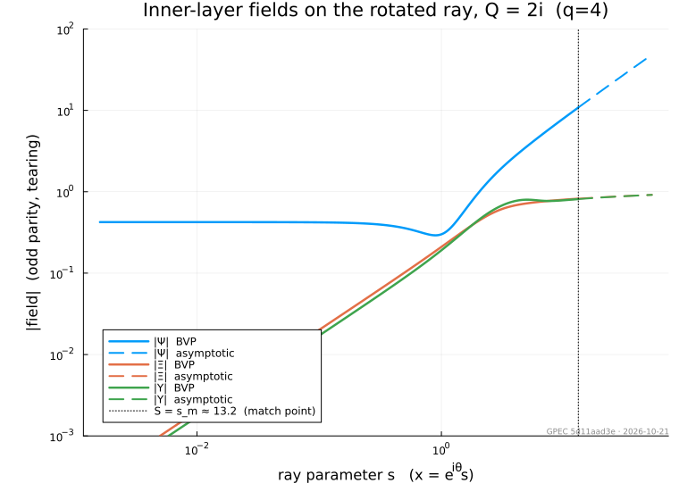
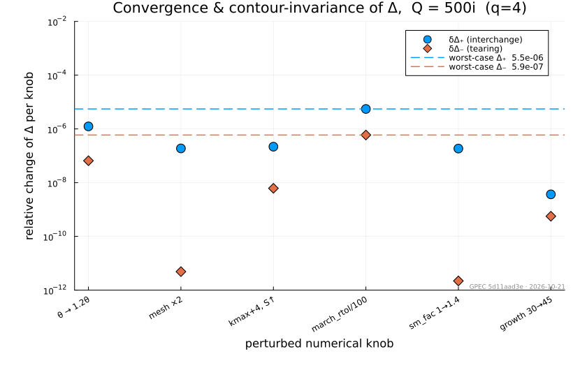
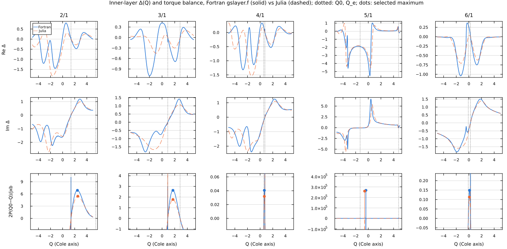

Tearing Module
The Tearing module groups the resistive tearing-mode analysis stack: InnerLayer (per-surface inner-layer matching data Δ(Q) for the GGJ and SLAYER models), Dispersion (physics-agnostic complex-plane scan and contour-intersection root extraction), CriticalResonantField (torque-balance error-field penetration threshold), and the tearing solve itself, solve(TearingProblem(ffs; ...), model; config=TearingConfig(...)), with its TearingResult and HDF5 output.
Tearing solve and layer inputs
GeneralizedPerturbedEquilibrium.Tearing.CriticalResonantFieldControl — Type
CriticalResonantFieldControlConfiguration for the critical resonant field (torque-balance) analysis, passed as TearingProblem(ffs; critical_resonant_field=CriticalResonantFieldControl(; ...)); a deck states it as [Tearing.CriticalResonantField]. The magnetic Prandtl number is the per-surface P_tor of the SLAYER layer parameters, and the natural rotation is each surface's resolved ΩE (the kinetic file's `omegaE, or theomegaEkHz` override), which it therefore requires.
Fields
Qmin,Qmax– override the sampled real-Q range;nothingsamples from Q0 toward Q_e per surfacen– number of Q samples per surfacestore_scan– write the per-surface Q, torque balance and Δ samples togpec.h5
GeneralizedPerturbedEquilibrium.Tearing.CriticalResonantFieldResult — Type
CriticalResonantFieldResultOutput of run_critical_resonant_field, one entry per SLAYER surface.
Fields
enabled– the analysis ranrational_index– rational-surface index of each entryQ_peak– normalized frequency Q at the torque-balance maximum (NaN if none or skipped)br_crit– critical normalized resonant field br/Bφ (NaN if none or skipped)br_crit_tesla–br_crit·|B0| in tesla, with the layer's B0, approximately comparable to the total resonant fieldresonant_area_weighted_field(Park et al., PRL 99, 195003 (2007))Q0– normalized natural E×B rotation τk·n·ΩE (NaN where Ω_E is unknown)scan– per-surface Q scans; empty unlessstore_scan
GeneralizedPerturbedEquilibrium.Tearing.CriticalResonantFieldScan — Type
CriticalResonantFieldScanReal-Q torque-balance samples at one surface.
Fields
Q– sampled normalized frequencies (Cole's axis)balance– torque-balance value 2·P·(Q0 − Q)/Im[−1/(α + Δ)] at each QDelta– inner-layer Δ(Q) at each Q
GeneralizedPerturbedEquilibrium.Tearing.LayerOverlapScan — Type
LayerOverlapScanPer-surface resistive layer widths and the psihigh they imply, from resistive_layer_overlap.
All widths are in normalized flux, converted from metres by Δψ = w / |da/dψ| so they compare against surface separations in ψ.
Fields
m,n– resonant mode numbers per surface, ordered by increasing ψpsi– surface location in normalized fluxrs– minor radius at the surface in metersdelta_s_m–|δ_s|, the Riccati resistive layer width, in meterswidth_delta_s– the same width in normalized flux,|δ_s|/|da/dψ|width_visco– the visco-resistive comparison scale as a Δψ widthwidth_dr– the diffusive-resistive width of Fitzpatrick (2025) Eq. (100) as a Δψ width; the criterion the recommendation uses (Sect. 5.6: strong shear near the separatrix puts every layer in the DR regime)extrapolated– true when the surface was located outside the equilibrium's ψ grid via the edge q-lawpsihigh_delta_s,psihigh_visco,psihigh_dr– domain implied by each width channel,nothingwhen that channel never overlaps within the scanned rangepsihigh– the recommendation, equal topsihigh_dr; the other two channels are reported for comparison and do not set the domainfirst_overlap– index of the first surface that overlaps its inner neighbour,nothingwhen none docaveats– reasons the verdict itself is qualified: an overlap that could not be established or excluded, or one decided by a surface placed on the separatrix lawnotes– per-surface and bookkeeping detail that does not qualify the verdict
GeneralizedPerturbedEquilibrium.Tearing.TearingConfig — Type
TearingConfig(; kwargs...)Numerical scan and root-search settings for solve(TearingProblem(...), model; config). GGJ uses physical gamma_range and omega_range, with positive growth rates and frequencies in the result's convention: lab-frame ω for a coupled solve, each surface's E×B-frame ω for an uncoupled one. SLAYER uses its normalized Q box. The default classification selects threshold classification for SLAYER and winding classification for GGJ.
Fields
gamma_range,omega_range- GGJ search bounds in 1/s and rad/s; both required for a GGJ solve.scan_mode- SLAYER scan method,:amror:brute_force; GGJ uses AMR.Q_re_range,Q_im_range- SLAYER normalized frequency search box.nre,nim- Initial scan resolution.amr_passes,amr_max_cells- AMR depth and cell cap.boxes,multi_box_prescreen_n- Optional SLAYER multi-box scan and prescreen resolution.pole_threshold,pole_threshold_adaptive- SLAYER threshold-classification controls.filter_above_poles,filter_outside_re- SLAYER contour filters.gamma_gap_threshold- SLAYER growth-rate separation threshold in 1/s.polish_roots,validity_rtol- Root polishing and SLAYER residual acceptance tolerance.root_classification-:auto,:threshold, or:winding; GGJ requires winding.store_scan- Retain scan data in the result and HDF5 output.
GeneralizedPerturbedEquilibrium.Tearing.TearingProblem — Type
TearingProblem(ffs; eta=nothing, rho=nothing, gamma=5/3, kwargs...)Tearing stability of a finished force-balance solve. Keywords describe surface coupling and the GGJ layer inputs; the SLAYER layer closures belong to SLAYERModel and scan settings to TearingConfig. The plasma itself (profiles, species, Zeff and transport defaults, confinement time and resistivity closure) is the equilibrium's kinetic data, ffs.equil.kinetic (see KineticProfileData), so every layer model sees one plasma. Solve with solve(problem, GGJModel(); config) or solve(problem, SLAYERModel(); config). GGJ needs the raw Δ′ matrix (Riccati with `vacflag=true, or Galerkin withrpec_flag=true`). Both models report lab-frame roots from each surface's E×B rotation.
Fields
ffs- Outer solution, retained by reference.coupling_mode,msing_max- Uncoupled or coupled analysis and its maximum number of surfaces.omega_E_kHz- Per-surface E×B rotation overrides keyed by m/n, replacing the kinetic data'somega_E.critical_resonant_field- The SLAYER penetration-threshold calculation, aCriticalResonantFieldControl;nothing(default) skips it.eta,rho- GGJ resistivity in Ω·m and mass density in kg/m³, a scalar or one value per surface (core to edge), as inMatchProblem.nothing(default) derives them from the kinetic data: η from its resistivity closure, the one SLAYER uses, and ρ = mi·ni of its main ion. Unused bySLAYERModel.gamma- GGJ ratio of specific heats.
GeneralizedPerturbedEquilibrium.Tearing.TearingResult — Type
TearingResultOutput of the tearing solve: summary eigenvalues (ω, γ) and the full root-extraction diagnostics.
Fields
enabled–trueonly when the analysis actually ranproblem– producing TearingProblem, or nothing for a low-level scanconfig– resolved scan configuration used by the modelmodel– the inner-layer model solved;nothingwhen the analysis did not runparams– SLAYER or GGJ layer parameters, one per surfacerational_psi,rational_q– ψ_N and q of each surface, aligned withparams; empty when built from bare parameters, and then not written to HDF5dp_matrix– outer-region Δ' matrix used: rs-referenced for SLAYER (`deltaprimetorsreference, written asPerSurface/Deltaprimematrixrs), the ψ_N matrix for GGJ (PerSurface/Deltaprimematrix`)Q_root– tearing eigenvalue(s) in normalized Q- length
nsurfacesin:uncoupledmode - length
1in:coupledmode (global eigenvalue normalized byparams[1].tauk)
- length
omega,gamma– lab-frame angular frequency Re(Q)/τk inrad/sand growth rate Im(Q)/τk in1/s; positive gamma is unstable. An uncoupled root is moved from its layer's E×B frame by n·ΩE (ΩE = 0 where unknown); a coupled GGJ layer sees s + i·n·Ω_Eper_surface_extraction–Vector{GrowthRateResult}, one per surface in uncoupled mode, in each surface's E×B frame. Empty in coupled mode.coupled_extraction– singleGrowthRateResultin coupled mode.nothingotherwise.layer_widths–Vector{LayerWidths}, one per SLAYER surface: thedel_sRiccati layer thickness in meters plus FKR / visco-resistive scales. Empty for GGJ.omega_E– E×B angular frequency ΩE per unit n inrad/son each surface: the kinetic file's value or the `problem.omegaE_kHz` override; NaN where neither gives oneq_shift– real Doppler offset−τ_k·n·Ω_Eapplied to each surface's inner-layer Q; zero outside:coupledmode, where rotation does not enter. Zero for GGJ, whose shift n·Ω_E acts on the growth-rate variablescan_data– scan results (per-surface in uncoupled, single entry in coupled). Empty unlessconfig.store_scan == true.critical_resonant_field–CriticalResonantFieldResult;enabled=falsewhenproblem.critical_resonant_fieldisnothing
CommonSolve.solve — Method
solve(prob::TearingProblem, model) -> TearingResultTearing growth rates per surface with the inner layer of model.
GeneralizedPerturbedEquilibrium.Tearing._q_shift — Method
_q_shift(p::SLAYERParameters, Ω_E) -> Float64Real offset added to a surface's scanned inner-layer Q for E×B rotation Ω_E per unit n [rad/s]. The layer's Q is the mode frequency in the local E×B frame (Burgess et al. 2026, Table 1), while the coupled scan runs in the lab frame, so
Q_layer = τ_k·ω_lab − τ_k·n·Ω_E ⇒ q_shift = −τ_k·n·Ω_EGeneralizedPerturbedEquilibrium.Tearing.delta_prime_to_rs_reference — Method
delta_prime_to_rs_reference(dp_matrix, params) -> Matrix{ComplexF64}Convert the outer-region Δ' matrix from its ψN reference length (STRIDE/BVP convention) to the rs-based x̂ = (r − r_s)/r_s reference of the slab layer (Fitzpatrick 2023 convention, shared by dc_tmp and the S^(1/3) Δ(Q) scale). With the Mercier exponent α = √(−D_I) (Glasser, Greene & Johnson 1975, Eqs. 16, 24; Glasser, Wang & Park 2016, Eq. 26) and K = r_s·(dψ_N/dr)|_s,
Δ̂_ij = K_i^(1/2+α_i) · Δ'_ij · K_j^(α_j−1/2)which reduces to Δ̂ = r_s·Δ' at α = 1/2. The off-diagonal split is a similarity transform that leaves every dispersion root unchanged. K and α come from SLAYERParameters.k_ref / .alpha_mercier; hand-built parameters default to k_ref = 1, making this the identity.
GeneralizedPerturbedEquilibrium.Tearing.layer_overlap_scan — Method
layer_overlap_scan(equil, model::SLAYERModel, ns) -> Union{Nothing,LayerOverlapScan}The binding resistive-layer overlap scan over the toroidal mode numbers ns: the one with the innermost overlap point, or the first scan when none overlaps. Uses the equilibrium's kinetic data and model's layer closures, as the SLAYER tearing solve does, in the flux label Fitzpatrick (2025) Eq. (100) is anchored to. Caveats are logged as warnings and notes as info.
GeneralizedPerturbedEquilibrium.Tearing.resistive_layer_overlap — Method
resistive_layer_overlap(equil, profiles::KineticProfiles; n_tor, kwargs...)
-> LayerOverlapScanLocate the q = m/n_tor rational surfaces, compute each one's resistive layer width, and report the outermost psihigh at which adjacent layers are still separated.
Surfaces beyond the grid come from the inverse equilibrium's own q, or from separatrix_q_law on the direct path, when extrapolate=true; only the first rational past ψ = 1 is placed, and it is scored only if the kinetic profiles reach it. The recommendation never exceeds ψ = 1, and when no overlap is established the domain keeps its requested limit. Widths come from slayer_algebraic_widths via build_slayer_inputs, with the same plasma inputs and resistivity closure as the SLAYER analysis; delta_s is a Riccati comparison only.
Arguments
equil– a formedPlasmaEquilibriumprofiles–KineticProfilesspanning the scanned ψ range
Keyword arguments
n_tor– toroidal mode number; surfaces are q = m/n_torm_max– runaway backstop on the poloidal mode number (default2000), not a physics limit; if it stops the outward search,caveatssays somax_layer_solves– maximum number of surfaces scored, innermost kept (default64);caveatsrecords when it truncatespsihigh_safe– treat this as the outer edge of trusted equilibrium data (defaultequil.profiles.xs[end])psi_gap– minimum distance from the separatrix flux for a placed surface on the direct path (default1e-9, numerical); inverse equilibria ignore itextrapolate– search pastpsihigh_safeon the separatrix q-law (defaulttrue)theta– poloidal angle for the minor-radius chord, used only byrs_method=:midplane(default0.0)rs_method– radial label of the widths and their ψ Jacobian (default:flux, the label Fitzpatrick Eq. (100) is anchored to; seeradial_label)bt,mu_i,zeff,chi_perp_e,chi_perp_i,chi_tor,tau_E,P_perp_model,resistivity_model,lnLambda_form– passed through tobuild_slayer_inputs. The defaults are placeholders: pass the run's own values
Surface k overlaps its inner neighbour when ψ_k − w_k/2 < ψ_{k-1} + w_{k-1}/2. Both surfaces are then contaminated, so the recommendation is surface k-1's own ψ.
GeneralizedPerturbedEquilibrium.Tearing.run_critical_resonant_field — Method
run_critical_resonant_field(model, params, omega_E, dp_diag, ctrl) -> CriticalResonantFieldResultCritical normalized resonant field br/Bφ for error-field penetration at each SLAYER surface, from the torque balance of Cole and Fitzpatrick, Phys. Plasmas 13, 032503 (2006), Eq. 62. The magnetic Prandtl number is the layer's P_tor, and the natural rotation is the E×B frequency of the m/n mode, Q0 = τk·n·ΩE, with omega_E the resolved ΩE per unit n at each surface [rad/s]. The outer stability is α = S^(-1/3)·(Δcrit − rs Δ'), with `dpdiag` the rs-referenced Δ' diagonal and Δcrit the layer's critical-Δ offset, as in the dispersion relation. A surface whose ΩE is unknown (NaN), or that is tearing-unstable (α ≤ 0), is skipped with a warning; if no surface has a known ΩE, the analysis cannot run and this throws.
GeneralizedPerturbedEquilibrium.Tearing.run_slayer_from_inputs — Method
run_slayer_from_inputs(model::InnerLayerModel, params, dp_matrix, problem, config;
rational_psi, rational_q, omega_E) -> TearingResultRun the tearing scan and root extraction for SLAYER model on pre-built per-surface parameters and the outer-region Δ' matrix, skipping the TearingProblem setup. omega_E is the E×B angular frequency per unit n at each surface in rad/s, overridden by problem.omega_E_kHz; empty means unknown (no shift, reported as NaN). In coupled mode it Doppler-shifts each surface's Q; an uncoupled layer is solved in its own E×B frame and its root moved by τk·n·ΩE. Roots are reported in the lab frame.
GeneralizedPerturbedEquilibrium.Utilities.save_to_hdf5 — Method
save_to_hdf5(parent::Union{HDF5.File,HDF5.Group}, result::TearingResult)Write result into a Tearing/ subgroup of parent, replacing any existing one.
The module provides an abstract InnerLayerModel interface and two concrete models: the GGJ (Glasser–Greene–Johnson) layer documented below, with three interchangeable solver backends, and the pressureless SLAYER Fitzpatrick Riccati layer. Further inner-layer models (kinetic layers) plug in through the same interface.
Two papers define the equations and the asymptotic construction; the code and this page cite them by equation number rather than restating them:
- GWP2016 — A. H. Glasser, Z. R. Wang and J.-K. Park, Computation of resistive instabilities by matched asymptotic expansions, Phys. Plasmas 23, 112506 (2016).
- GW2020 — A. H. Glasser and Z. R. Wang, Asymptotic solutions and convergence studies of the resistive inner region equations, Phys. Plasmas 27, 012506 (2020).
Equations and matching data
The GGJ layer equations (GWP2016 Eq. 11 ≡ GW2020 Eq. 1) couple the perturbed flux $\Psi$ and the layer variables $\Xi$, $\Upsilon$ in the scaled distance $x$ from the rational surface. Their equilibrium coefficients $E, F, G, H, K$ (GWP2016 Eq. A8) are held in GGJParameters. A physical growth rate $\gamma$ maps to the scaled $Q$ by inner_Q (GWP2016 Eqs. A11, A14–A16), and rescale_delta returns the matching data to physical units. The model requires Mercier stability, $D_I < 0$ (mercier_di, GWP2016 Eq. A9), so that at large $x$ the solutions include two power laws (GW2020 Eq. 49).
The matching datum $\Delta$ is the ratio of the large to the small power-law coefficient. Imposing the two parities at $x = 0$ gives the pair $(\Delta_+, \Delta_-)$ of GWP2016 Eqs. (34)–(35). Parity is that of the displacement $\Xi$ (GWP2016 Eq. 34; Pletzer, Bondeson & Dewar, J. Comput. Phys. 115, 530 (1994), Eqs. 32–33): $\Delta_+$ is even, $\Psi(0)=\Xi'(0)=\Upsilon'(0)=0$, the interchange channel; $\Delta_-$ is odd, $\Psi'(0)=\Xi(0)=\Upsilon(0)=0$, the tearing channel. Positional pairs, such as deltar in the matching and RaySolveResult.Δ, are always ordered $(\Delta_+, \Delta_-)$, like the unknowns $d_\pm$ of GWP2016 Eq. (38) and Pletzer, Bondeson & Dewar Eqs. 83, 85; InnerLayerResponse names them interchange and tearing.
Numerical method
The figures use the $q = 4$ DIII-D-like surface of q4_surface_benchmark ($S \approx 4.6\times10^{6}$, $D_I \approx -0.31$).
Solver backends
The GGJ model exposes three solvers through the solver type parameter of GGJModel; all use the same large-$x$ asymptotic basis and return $\Delta$ in the same convention:
| backend | method | robust regime |
|---|---|---|
:shooting | backward stable shoot from $X_\mathrm{max}\to 0$ | $\lvert Q\rvert \ll 1$ |
:galerkin | Hermite-cubic finite-element (real axis) | surface- and $\arg Q$-dependent; see Choosing a backend |
:ray (default) | rotated contour: inward-marched far-field condition + Hermite-cubic BVP | $\lvert Q\rvert \sim 500$ on/near the imaginary axis |
Rotation and resistivity scans live on the imaginary-$Q$ axis, where the pseudo-resonance at $x^2 = -Q^2(G+KF)$ sits on the real-$x$ path. On the $q = 4$ surface there :shooting and :galerkin lose accuracy beyond $|Q| \sim 1$ and $|Q| \sim 4$ respectively (the poles of $\Delta(Q)$ themselves lie near the real-$Q$ axis):

The rotated ray
:ray writes the layer equations as $dv/dx = M(x)\,v$ in the plain state $v = (\Psi, \Xi, \Upsilon, \Psi', \Xi', \Upsilon')$. $M$ is polynomial in $x$, so $x = 0$ is an ordinary point and the system continues analytically onto the ray
\[x = e^{i\theta}\, s, \qquad s \in [0, S], \qquad \theta = \tfrac14\arg Q .\]
This angle makes the parabolic-cylinder exponent of the outer solutions real and lifts the pseudo-resonance off the contour; $\theta = 0$ is a real-axis solve.

Hermite-Galerkin BVP
On $[0, s_m]$ the system is solved with the :galerkin backend's Hermite-cubic assembly (GWP2016 Eq. 32) written on the ray, $A u_{ss} + e^{i\theta}B u_s + e^{2i\theta}C u = 0$, with the parity conditions at $s = 0$. The far end carries the point condition
\[v(s_m) = U_s + \Delta\, U_b + c_1 E_1 + c_2 E_2 ,\]
where $U_s, U_b$ are the small and large power-like solutions and $E_{1,2}$ the forward-decaying exponential pair; $\Delta, c_1, c_2$ replace the last node's six unknowns. Each cell resolves the local WKB rate, with a minimum cell count for small $|Q|$.
Far-field boundary and the inward march
The boundary data come from the same inps Wasow basis as the other backends (GW2020 Eqs. 3–53), evaluated at the radius $S$ where its residual is below tolerance (pick_smax). At large $|Q|$, $S$ lies far beyond $s_m$, and the power pair is marched inward by 2-stage Radau IIA modulo the decaying pair, the subspace in which $\Delta$ is defined. The decaying pair grows under backward integration at a rate $\sim\rho s$. Radau's stability function decays as $2/z$, so steps with every growing mode at $z > 8$ damp those directions while the slowly varying power pair stays resolved; the step count grows only like $\ln(S/s_m)$. Nearer $s_m$ the march resolves the growing directions, carries the decaying frame, and projects it out periodically. The damped zone runs in Complex{Double64} because its ill-conditioned implicit solves mix the power pair at a level $\sim\epsilon\rho S^2$.
On the real axis with imaginary $Q$ the switch to resolved steps lands on the pseudo-resonance, a turning point where the decaying directions cannot be identified; the default $\theta = \arg(Q)/4$ keeps it off the contour.
For matching, solve_inner_profile returns $\Delta$ and the layer-center fields $\Psi(0), \Xi(0)$ from the rotated solve; $x = 0$ lies on every contour, so these are the real-axis values. Fields across the layer on the real $\psi$ axis are an opt-in diagnostic (GGJModel(; real_profiles=true), not exposed in the deck): they come from an extra $\theta = 0$ solve, while the $x = 0$ values, and so the penetrated field, stay those of the rotated solve. The $\theta = 0$ solve's $\Delta_\pm$ are checked against the rotated ones (certΔ, which warns on disagreement, as can happen at large $|Q|$ near the imaginary axis).

Validation and benchmarks
Cross-check against the Fortran rmatch solver. At the Glasser & Wang (2020) Eq. (55) operating point $Q = 0.1234$ (real) the :galerkin backend reproduces the Fortran rmatch deltac solver to $\sim 10^{-8}$:
| quantity | :galerkin (= Fortran to $10^{-8}$) | :ray |
|---|---|---|
| $\Delta_+$ (interchange) | $3.698368\times 10^{4}$ | $3.69789\times 10^{4}$ |
| $\Delta_-$ (tearing) | $14.759721$ | $14.759715$ |
This point sits near a pole of $\Delta_+(Q)$, which amplifies every solver's error; hence the $1.3\times10^{-4}$ :galerkin↔:ray difference in $\Delta_+$ against $4\times10^{-7}$ in $\Delta_-$.
Physical benchmark on the imaginary axis. On the $q=4$ rational-surface benchmark (q4_surface_benchmark, $S \approx 4.58\times10^6$, $D_I \approx -0.312$) the :ray backend is pinned at $Q = 500i$, a regime entirely beyond :galerkin:
| quantity | value at $Q = 500i$ |
|---|---|
| $\Delta_+$ (interchange) | $2.4720 + 13.3540\,i$ |
| $\Delta_-$ (tearing) | $0.13750 + 0.74275\,i$ |
Convergence and contour invariance. $\Delta$ does not depend on the contour angle, so re-solving with each numerical knob perturbed in turn (delta_convergence) gives an error bar: at $Q = 500i$ the worst case is $\sim 5\times10^{-6}$ for $\Delta_+$ and $\sim 6\times10^{-7}$ for $\Delta_-$. Across machines and BLAS builds the values reproduce to $\sim 10^{-5}$ relative, hence the five significant figures above.

Choosing a backend
:ray is the default — GGJModel() constructs GGJModel{:ray}() — and the recommended backend for every $Q$. It uses the same Hermite-cubic weak form as :galerkin; they differ in where and how the far-field condition is imposed. :galerkin imposes it on the real axis through resonant and extension cells at the radius where the series residual reaches $10^{-7}$, on a fixed nx-cell grid. :ray takes the series data where the residual reaches smax_tol = $10^{-9}$ (pick_smax), marches them inward to $s_m$, where every exponential family has decayed 45 e-folds from the origin, and resolves the local WKB rate in every cell on $[0, s_m]$. Both radii are computed per solve; S, smax_tol and sm_fac override them, and delta_convergence perturbs them to give an error bar.
:galerkin takes a few milliseconds per solve, 3–60 times less than :ray, but its accuracy depends on the surface and on $\arg Q$ even at small $|Q|$. Against a tightened :ray reference, on the GW2020 Eq. (55) surface it errs by $7\times10^{-5}$ at $Q = 0.1$ and $3\times10^{-3}$ at $Q = 0.3$; near $\arg Q = 157.5^\circ$ it errs by order unity at $|Q| = 0.1$ on that surface and by 0.4 at $|Q| = 0.3$ on the $q = 4$ surface. :ray held $2\times10^{-6}$ on all three surfaces tested, for $|Q|$ from 0.01 to 1.
The backends take disjoint numerical-knob keywords: pass GGJModel(solver=:galerkin) explicitly when supplying the Galerkin nx/xfac knobs; passing them to :ray throws a MethodError.
using GeneralizedPerturbedEquilibrium.InnerLayer
p = GGJ.q4_surface_benchmark() # GGJParameters for the q=4 benchmark surface
γ = 500im * GGJ.q0(p) # physical rate placing Q on the imaginary axis at 500i
Δ = solve_inner(GGJModel(), p, γ) # Δ.interchange, Δ.tearing with the default :ray backend
# Full result (raw Δ, contour, mesh, nodal solution, boundary conditioning) via solve_ray:
res = solve_ray(p, GGJ.inner_Q(p, γ))
res.Δ, res.breaks, res.bc_cond # res.Δ = (Δ₊, Δ₋) = (interchange, tearing)Critical resonant field
With a [Tearing.CriticalResonantField] section (TearingProblem(ffs; critical_resonant_field=CriticalResonantFieldControl())), each SLAYER surface also gets the critical resonant field for error-field penetration, from the steady-state torque balance of Cole and Fitzpatrick, Phys. Plasmas 13, 032503 (2006). The electromagnetic torque on the layer balances the viscous restoring torque when (Cole Eq. 61)
\[\frac{\operatorname{Im}\hat\Delta(Q)}{|\alpha + \hat\Delta(Q)|^2} = \frac{2P\,(Q_0 - Q)}{S\hat\kappa\,(b_r/B_\phi)^2}, \qquad \hat\kappa = \left[\frac{2}{s}\right]^2 \int_{r_s}^{a} \frac{\mu(r_s)}{\mu(r)}\,\frac{dr}{r},\]
and balance is lost above (Cole Eq. 62)
\[\left(\frac{b_r}{B_\phi}\right)^2_\mathrm{crit} = \max_Q \frac{2P\,(Q_0 - Q)}{S\hat\kappa\,\operatorname{Im}[-1/(\alpha + \hat\Delta(Q))]} .\]
- Inputs. P is each layer's
P_tor(so χφ from the kinetic file, or the scalar `chitor), S its Lundquist number, and Q0 = τ_k·n·ω_E the natural E×B rotation of the m/n mode (Cole's ω0; the diamagnetic drifts enter through Q_e and Q_i in Δ̂). Ω_E is the kinetic file'somegaEor theomegaE_kHz` override; the analysis needs it, and a surface without one is skipped. - Approximations. As in Fortran
gslayer.f, the viscosity integral is taken as 1/2 (κ̂ = 2/s²). - Stability α. Each surface uses its own α = S^(−1/3)(Δcrit − rs Δ'), so α + Δ̂ is the dispersion relation's residual and the torque balance shares its poles with SLAYER's free modes (Fortran fixes α = 10⁻²). Cole and Fitzpatrick have no Δcrit; including it treats the curvature offset as independent of frequency. It is zero unless `Dc_type` is set. Cole's threshold needs a tearing-stable surface, so a surface with α ≤ 0 is skipped with a warning.
- Q axis. Q is on Cole's axis, with the diamagnetic poles at Qe and Qi; it runs opposite to the dispersion scans' Re Q, so the scan uses the layer response at −Q.
- Threshold. Penetration is associated with a saddle-node bifurcation (Fitzpatrick, Nucl. Fusion 33, 1049 (1993), Sec. 7.4): as the field grows, Q moves from Q0 toward the electron fluid at Qe, where the torque vanishes, and the threshold is the first resolved saddle-node bifurcation on that path, above which the shielded branch followed from Q0 no longer exists. Both the rise to and fall from an interior maximum must exceed 0.1 % of its value within a contiguous retained interval. This excludes monotonic clipped windows and small numerical extrema; excluded samples do not connect separate intervals. A later, higher maximum does not replace the first resolved saddle-node bifurcation. Points where |Δ̂| ≤ α, the unshielded zone next to Qe, are not candidates, so the balance spike there is never taken. With no resolved saddle-node bifurcation no discrete threshold is reported (NaN). Fortran takes the global maximum on a window instead, which picks that spike. The search assumes Qi ≤ 0 ≤ Qe; a surface where that fails is skipped with a warning.
Outputs go to Tearing/CriticalResonantField/ (br_crit = br/Bφ, br_crit_tesla, Q_peak, Q0, with P in PerSurface/P_tor, and with store_scan the per-surface Scan/Surface_<k>/{Q, balance, Delta}).
br_crit is normalized by the toroidal field, as in Cole and Fitzpatrick (2006, Eqs. 61–68) and Fitzpatrick, Phys. Plasmas 30, 092512 (2023), Eq. 120. br_crit_tesla = br_crit·|B0|, with the layer's B0, is for comparison with SingularCoupling/resonant_area_weighted_field, the total resonant field with the ideal plasma response, which Park et al., Phys. Rev. Lett. 99, 195003 (2007) identify as the field that opens islands. The comparison is approximate: the theory's br is a cylindrical field at the layer, and no reference maps it onto the area-weighted toroidal field. `penetratedareaweightedfield` already includes the layer response and is not the matching quantity.
Benchmark against Fortran
On the DIII-D-like example (2/1–6/1, n = 1, P = 1, κ̂ = 2/s², Q ∈ [−5, 5] with 20001 points), both codes were given Fortran's normalized inputs and Fortran's fixed α = 10⁻².
- Torque balance. Fed Fortran's own Δ(Q) table, the Julia routine reproduces Fortran's balance to all printed digits on every surface, so the thresholds differ only through the selection rule above.
- Layer model. Fortran solves Park's drift-MHD layer and Julia Fitzpatrick's, so Δ(Q) differs by a median 24–78 % between Qi and Qe on 2/1, 3/1, 4/1 and 6/1 (7 % on 5/1).
The dots in the figure mark each code's balance maximum between Q_e and Q0 at that fixed α, not the fold threshold above.

API Reference
InnerLayer
GeneralizedPerturbedEquilibrium.InnerLayer.InnerLayerModel — Type
InnerLayerModelAbstract supertype for resistive inner-layer models. Each concrete model is a small, parameter-free type tag (often parameterized by a solver-choice symbol) that selects a solve_inner method.
Implementations live in submodules of InnerLayer, e.g. InnerLayer.GGJ.
GeneralizedPerturbedEquilibrium.InnerLayer.InnerLayerParameters — Type
InnerLayerParametersAbstract supertype for the per-surface physical-parameter structs consumed by the inner-layer models (SLAYERParameters, GGJParameters). Lets the dispersion runner and HDF5 output dispatch generically over a vector of single-model parameters.
GeneralizedPerturbedEquilibrium.InnerLayer.InnerLayerResponse — Type
InnerLayerResponseParity-projected inner-layer matching data at one rational surface. The two components correspond to the homogeneous parity solutions of the half-domain inner-layer problem (parity boundary conditions imposed at X = 0). They are the Δ_{j,±}(γ) of Glasser, Wang & Park, Phys. Plasmas 23, 112506 (2016), Eqs. (34)–(35).
Fields
tearing— odd-parity matching coefficient Δ₋: Ξ odd, Ψ even, the reconnecting channel whose Δ is the constant-ψ tearing Δ′ (Pletzer, Bondeson & Dewar, J. Comput. Phys. 115, 530 (1994), Eqs. 77, 86–87, 89). Every resistive inner-layer model populates it.interchange— even-parity matching coefficient Δ₊: Ξ even, Ψ odd, the non-reconnecting interchange channel carrying the Glasser, Greene & Johnson (1975) stabilization. Pressureless models (SLAYER) set it to zero.
Parity is that of the displacement Ξ, matched to the outer ξ (GWP2016 Eq. 34; Pletzer, Bondeson & Dewar Eqs. 32–33), with + even and − odd. The fields are named by the physics channel because the parity of the flux Ψ is the opposite. Positional pairs elsewhere in InnerLayer (e.g. the Δ of solve_inner_profile) are ordered (Δ₊, Δ₋) = (interchange, tearing).
GeneralizedPerturbedEquilibrium.InnerLayer.layer_eta — Method
layer_eta(equil, surfaces) -> Vector{Float64}Resistivity η in Ω·m at each rational surface of surfaces (core to edge), from the equilibrium's kinetic data by its resistivity closure, the one the SLAYER layer uses.
GeneralizedPerturbedEquilibrium.InnerLayer.layer_omega_E — Method
layer_omega_E(equil, surfaces) -> Vector{Float64}E×B rotation ΩE per unit n in rad/s at each rational surface of surfaces, from the kinetic data's `omegaE; NaN when the equilibrium carries no kinetic data or the data noomega_E`.
GeneralizedPerturbedEquilibrium.InnerLayer.layer_response — Method
layer_response(model::InnerLayerModel, params, z::Number; kwargs...) -> InnerLayerResponsesolve_inner in the variable model's dispersion scans run in, so the layer is evaluated at exactly the value scanned: the growth rate s itself for GGJ, and Q = (ω + iγ)·τk = i·s·τk for SLAYER.
GeneralizedPerturbedEquilibrium.InnerLayer.layer_rho — Method
layer_rho(equil, surfaces) -> Vector{Float64}Mass density ρ = mi·ni in kg/m³ of the main ion at each rational surface of surfaces, from the equilibrium's kinetic data.
GeneralizedPerturbedEquilibrium.InnerLayer.model_name — Method
model_name(model) -> StringThe inner_model token the tearing output records for model, e.g. "ggj_ray" or "slayer_fitzpatrick".
GeneralizedPerturbedEquilibrium.InnerLayer.solve_inner — Function
solve_inner(model::InnerLayerModel, params, s::Number; kwargs...) -> InnerLayerResponseCompute the parity-projected matching data (the tearing and interchange fields of InnerLayerResponse) for the given inner-layer model, physical parameters params, and complex growth rate s = γ − iω in 1/s, in the surface's E×B frame. Every model takes this same s. Concrete models specialize this function.
See InnerLayerResponse for the physics-oriented field definitions. Pressureless models (SLAYER) populate only tearing and leave interchange at zero; finite-pressure models (GGJ) populate both.
GeneralizedPerturbedEquilibrium.InnerLayer.solve_inner_profile — Function
solve_inner_profile(model::InnerLayerModel, params, γ::Number; kwargs...)
-> (; Δ, x, Ψ, Ξ, dψdx, rescale, ...)Compute the inner-layer matching data and the reconstructed layer field profiles for the given model — everything an outer↔inner matching driver needs from the layer, so drivers never touch model internals. Returns a named tuple with at least:
Δ— the same matching data assolve_inner, as the pair (Δ₊, Δ₋) = (interchange, tearing)x— real ascending grid in the model's stretched inner coordinate,x ≥ 0with the rational surface atx = 0Ψ,Ξ—length(x) × 2profiles, columns in the order ofΔ, in the model's inner normalization:Ψthe normal-field (reconnected-flux) variable,Ξthe displacementdψdx— conversion to poloidal-flux distance,δψ = dψdx · xrescale— amplitude factor converting the inner-normalized profiles to the outer δψ-normalized convention (companion of the Δ rescale)
Concrete models may return additional diagnostic fields (e.g. a solve-quality certificate). Solver-knob keywords are model-specific.
GGJ
GeneralizedPerturbedEquilibrium.InnerLayer.GGJ.GGJModel — Type
GGJModel{S,O} <: InnerLayerModel
GGJModel(; solver=:ray, options...)Glasser–Greene–Johnson resistive inner-layer model. S selects the solver backend: :ray (default; rotated contour with an inward-marched far-field condition, robust at large |Q|), :galerkin (real-axis Hermite FEM with resonant/extension matching cells; accuracy depends on the surface and arg Q, even at small |Q|), or :shooting (|Q| ≪ 1 only). Backend keywords given at construction, e.g. GGJModel(; solver=:galerkin, nx=1280), apply to every solve.
Fields
options::NamedTuple- Backend keywords forwarded to every solve; call-site keywords win.
GeneralizedPerturbedEquilibrium.InnerLayer.GGJ.GGJParameters — Type
GGJParametersDimensionless parameters of the Glasser–Greene–Johnson inner-layer model at a single rational surface, plus the local Alfvén/resistive timescales needed to scale the matching data back to physical Δ. The equilibrium coefficients E, F, G, H, K, M are the flux-surface averages defined in GWP2016 Eq. (A8); E, F, G, H, K enter the inner-region equations (Eq. 11).
Fields
| field | meaning |
|---|---|
E | Glasser interchange parameter (enters Mercier D_I = E+F+H−¼) |
F | Glasser interchange parameter |
G | Coupling coefficient (curvature × pressure gradient) |
H | Pfirsch–Schlüter coefficient |
K | Glasser parameter |
M | Inertia factor (A8; enters K and Q₀, X₀); held, not used here |
taua | Local Alfvén time at the rational surface |
taur | Local resistive time at the rational surface |
v1 | Coordinate scale: inner X = v₁·δψ/X₀; enters rescale_delta |
ising | Index of the singular surface (traceability only) |
The growth rate γ is not stored here; it is a separate argument to solve_inner.
GeneralizedPerturbedEquilibrium.InnerLayer.GGJ.GGJShootingSystem — Type
GGJShootingSystemPrecomputed origin- and infinity-side arrays for the backward shoot. Construct via _build_shooting_system.
Fields
params,Q- Layer parameters and scaled growth rate.p1,pplus- p₁ = √(−D_I) and p₁ − 1/2.al0- Origin Frobenius exponents (p₁, 1/2, −p₁, −1/2), the diagonal of the origin exponent matrix.al1- First-order coupling in the origin-diagonalized basis.d0,d0inv- Origin diagonalizing matrix and its inverse.ups-(4, 4, nps)origin power-series coefficients in t²,ups[:, :, 1] = I.nps- Origin series length.d1- Diagonalizing matrix at large t.pexp- Logarithmic exponents of the large-t asymptotic basis.bl1- Coefficients ±√Q of t²/2 in the large-t exponentials.tmax,tmin- Shoot start (large t) and end (small t).
GeneralizedPerturbedEquilibrium.InnerLayer.GGJ.GalerkinCell — Type
GalerkinCellOne finite element of the Galerkin grid.
Fields
etype- Cell type (CT_NONE,CT_EXT2,CT_EXT1,CT_EXT,CT_RES).x_left,x_right- Cell end points.x_lsode- Upper limit of the resonant-cell integral and the xmax surface term (`CTRES` only).np- Highest local Hermite slot per component: 3 for Hermite cells, 1 forCT_EXT(left node only), −1 forCT_RES.map-(mpert, np+1)local-to-global DOF map;CT_EXTappends a column of asymptotic DOFs,CT_RESholds only those.emap- Asymptotic DOF indices shared byCT_EXTandCT_RES; onlyemap[1]is active (noexp).
GeneralizedPerturbedEquilibrium.InnerLayer.GGJ.GalerkinWorkspace — Type
GalerkinWorkspaceGrid, banded system and scratch buffers of one Galerkin solve.
Fields
cells- Grid cells from x = 0 outward.ndim- Number of global unknowns.nx- Number of cells.kl- Banded half-bandwidth (ku = kl).mat-(2kl+ku+1, ndim, 2)LAPACK banded matrices, one per parity (1 = even/Δ₊, 2 = odd/Δ₋).rhs,sol-(ndim, 2)right-hand sides and solutions per parity.cell_mat_buf,cell_mat_ext_buf-(3, 3, 4, 4)per-cell scratch for the Hermite and extension terms.cell_rhs_ext_buf-(3, 4)per-cell extension RHS scratch.ab_buf,rhs_buf- Scratch copies for the banded LU solve.
GeneralizedPerturbedEquilibrium.InnerLayer.GGJ.InnerAsymptoticsCache — Type
InnerAsymptoticsCacheFrozen inps Wasow asymptotic-basis construction for one (GGJParameters, Q) pair, stored as SMatrix/SVector for allocation-free evaluation. Index convention: P[k+1] holds the k-th-order matrix P_k, etc.
Fields
params, Q, kmax— input parameters and series truncation order.R = (r₊, r₋)— Mercier-shifted Frobenius exponents at infinity (Eq. 49).T— 6×6 eigenvector basis of A₀ (Eq. 7).J—(J₀, J₁, J₂), the J-rotated coefficient matrices (Eqs. 9–10).P— splitting matrices, k = 0..kmax+2 (Eqs. 16, 22).Qmat— 2×2 inner-block transformation matrices, k = 0..kmax+2 (Eqs. 32–39).Y— 2×2 series matrices Yk = Y₀Zk, k = 0..kmax (Eqs. 50–52).
GeneralizedPerturbedEquilibrium.InnerLayer.GGJ.RaySolveResult — Type
RaySolveResultOutput of solve_ray.
Fields
Δ: rescaled matching data (Δ₊, Δ₋) = (interchange, tearing), the even (isol = 1) and odd (isol = 2) parities of the displacement Ξ.Δraw: the same pair in raw inps normalization, beforerescale_delta.cexp: decaying-pair coefficients (c₁, c₂) at s_m, one column per parity.Q,θ: scaled eigenvalue and contour angle.S: series radius where the far-field data were taken.series_ok: whetherpick_smaxreached its residual tolerance.bc_cond: condition number of the column-normalized boundary basis [Us, Ub, E].breaks: Hermite cell boundaries on [0, s_m].cfl,min_cells: mesh resolution parameters used byray_breaks.ws: the full Galerkin workspace of the BVP (system buffers included); the nodal solution isws.sol, both parities.
GeneralizedPerturbedEquilibrium.InnerLayer.GGJ._assemble_and_solve_point! — Method
_assemble_and_solve_point!(ws, params, Q, θ, Us, Ub, E; nq=6) -> (Δraw, cexp)Hermite Galerkin solve on the all-CT_NONE grid of ws along the ray x = e^{iθ}s, with the far-field condition imposed strongly at the last node: its state is v = Us + Δ·Ub + c₁E₁ + c₂E₂, with Us, Ub, E given as (Ψ, Ξ, Υ, Ψ', Ξ', Υ') in x-derivatives; the last node's six DOFs are replaced by (Δ, c₁, c₂). Returns the raw Δ and decaying-pair coefficients per parity (isol = 1 even/Δ₊, 2 odd/Δ₋); ws.sol holds the full nodal solution afterwards.
GeneralizedPerturbedEquilibrium.InnerLayer.GGJ._build_shooting_system — Method
_build_shooting_system(p::GGJParameters, Q::ComplexF64; nps=8, rtol=1e-6, fmax=1.0)Construct a GGJShootingSystem for the given parameters p and complex frequency Q, precomputing the origin and infinity asymptotic arrays used by the backward shoot.
GeneralizedPerturbedEquilibrium.InnerLayer.GGJ._physical_uv — Method
_physical_uv(params, Q, x) -> (I, U, V)3×3 coefficients of I·u'' − V·u' − U·u = 0 for u = (Ψ, Ξ, Υ) at real or complex x, with (I, V, U) = (A, −B, −C) of GWP2016 Eqs. 12–15: the rows of ggj_rows scaled by diag(1, Q², Q).
GeneralizedPerturbedEquilibrium.InnerLayer.GGJ.asymptotic_profile — Method
asymptotic_profile(params, res::RaySolveResult, srange) -> (; s, x, Ψ, Ξ, Υ)Evaluate the analytic representation u_small + Δ·u_big on the ray for s ≥ res.S; concatenated with solution_profile it should join the numeric solution seamlessly across the march zone.
GeneralizedPerturbedEquilibrium.InnerLayer.GGJ.asymptotic_residual — Method
asymptotic_residual(cache::InnerAsymptoticsCache, x::Number) -> SVector{2,Float64}Convergence measure of the asymptotic basis at real or complex x for each of the two algebraic columns, the analogue of GW2020 Eq. 54 in the J-rotated basis. Returns ‖dU − x·matrix·U‖∞ / max(‖dU‖∞, ‖x·matrix·U‖∞) per column, where matrix = J₀ + xfac·J₁ + xfac²·J₂ is the J-rotated coefficient matrix (the residual of v' = xJv, GW2020 Eq. 6).
GeneralizedPerturbedEquilibrium.InnerLayer.GGJ.boundary_basis — Method
boundary_basis(params, Q, cache, θ, S; growth=30.0, seed=20260707, dp_res=20.0)
-> (Us, Ub, E, cond_est)Boundary data at s = S taken directly from the inps series, used when the BVP edge is S itself (sm ≳ S): Us, Ub are the small/large power-like solutions as 6-component states in the inps normalization, E the numerically generated decaying pair, `condest` the condition number of the column-normalized basis.
GeneralizedPerturbedEquilibrium.InnerLayer.GGJ.build_asymptotics — Method
build_asymptotics(params::GGJParameters, Q::ComplexF64; kmax::Int=8) -> InnerAsymptoticsCacheConstruct the inps Wasow asymptotic basis (GW2020 Eqs. 7–53), truncating each power series at order kmax. Evaluate with evaluate_asymptotics; pick a matching radius with pick_smax.
GeneralizedPerturbedEquilibrium.InnerLayer.GGJ.decaying_pair — Method
decaying_pair(params, Q, θ, S; growth=30.0, seed=20260707, dp_res=20.0) -> E (6×2)Orthonormal basis of the forward-decaying pair at s = S on the ray: random seeds integrated backward over [S, S+ΔS] with fully-resolved RK4, ΔS sized so the pair separates from everything else by ≈ growth e-folds.
GeneralizedPerturbedEquilibrium.InnerLayer.GGJ.delta_convergence — Method
delta_convergence(params, Q; verbose=true, kwargs...) -> (; Δ, spread, base, table)Error bar for the matching data: re-solve with each numerical knob perturbed in turn (contour angle, mesh, series order and radius, march tolerance, BVP edge s_m, decaying-pair separation) and report the relative change of (Δ₊, Δ₋); spread is the worst case per parity. θ moves outward only, away from the pseudo-resonance x² = −Q²(G+KF).
GeneralizedPerturbedEquilibrium.InnerLayer.GGJ.evaluate_asymptotics — Method
evaluate_asymptotics(cache::InnerAsymptoticsCache, x::Number; derivative=true, apply_T=true) -> (U, dU)Evaluate the inps asymptotic basis at x, real (x > 0) or complex on a rotated contour (principal branch of x^r; the series is in 1/x², so valid for |arg x| < π/2). Returns the 6×2 complex matrix U whose two columns are the power-like (Mercier) solutions of the GGJ system (column 1 large, column 2 small), and (if derivative=true) the 6×2 matrix dU of their derivatives dU/dx.
If apply_T=false, the result is left in the J-rotated basis (used by asymptotic_residual). The default apply_T=true returns it in the GW2020 Eq. (2) state basis, which physical_ua_dua converts to (Ψ, Ξ, Υ).
GeneralizedPerturbedEquilibrium.InnerLayer.GGJ.ggj_rows — Method
ggj_rows([CT,] params, Q, x) -> (Ũ, Ṽ)GWP2016 Eq. 11 solved for the second derivatives, u'' = Ũ·u + Ṽ·u' for u = (Ψ, Ξ, Υ), at real or complex x (used as given). CT is the element type (default ComplexF64). The Galerkin weak form scales the rows by diag(1, Q², Q) (_physical_uv); the ray march takes them as the lower half of its companion matrix (ode_matrix).
GeneralizedPerturbedEquilibrium.InnerLayer.GGJ.glasser_wang_2020_eq55 — Method
glasser_wang_2020_eq55(; taua=1.0, taur=1e6, v1=1.0) -> GGJParametersD-shaped aspect-ratio-2, q = 2 surface from Glasser & Wang, Phys. Plasmas 27, 012506 (2020), Eq. 55 (coefficients transcribed verbatim), the benchmark of their inps Wasow-basis convergence study (Figs. 1–3). At its operating point Q = 1.234e-1 (Fig. 1) the GGJ backends are cross-checked against the Fortran rmatch deltac; the paper's Δ_± (Eq. 54) is a series-convergence norm, not matching data.
taua, taur, v1 default to a unit normalization; override them for physical cases.
GeneralizedPerturbedEquilibrium.InnerLayer.GGJ.inner_Q — Method
inner_Q(p::GGJParameters, γ::Number) -> ComplexF64Scaled inner-layer growth rate Q = γ / Q₀ (GWP2016 Eq. A11).
GeneralizedPerturbedEquilibrium.InnerLayer.GGJ.march_boundary — Method
march_boundary(params, Q, θ, S, s_m, Us, Ub; rtol=1e-9, ztrk=0.3, purge_budget=2.5,
growth=30.0, seed=20260707, dp_res=20.0)
-> (Us_m, Ub_m, F)Transport the power-pair boundary data from the series radius S inward to s_m along the ray, modulo the decaying exponential pair (the quotient in which Δ is defined): 2-stage Radau IIA with purges against a carried decaying frame. rtol sets the step factor c = (rtol/100)^{1/3}; ztrk caps resolved-band steps at ztrk/gmax; `purgebudgetis the e-folds between purges;growth,seed,dpresgo to [decayingpair`](@ref).
GeneralizedPerturbedEquilibrium.InnerLayer.GGJ.mercier_di — Method
mercier_di(p::GGJParameters) -> Float64Mercier interchange index D_I = E + F + H − 1/4 (GWP2016 Eq. A9); D_I > 0 means local ideal interchange instability.
GeneralizedPerturbedEquilibrium.InnerLayer.GGJ.mercier_dr — Method
mercier_dr(p::GGJParameters) -> Float64Resistive interchange index D_R = E + F + H² (GWP2016 Eq. A10); D_R > 0 means local resistive interchange instability.
GeneralizedPerturbedEquilibrium.InnerLayer.GGJ.ode_matrix — Method
ode_matrix([CT,] p::GGJParameters, Q, x) -> SMatrix{6,6,CT}Coefficient matrix M(x) of GWP2016 Eq. 11 as dv/dx = M v, v = (Ψ, Ξ, Υ, Ψ', Ξ', Υ'), for real or complex x. M is polynomial in x, so x = 0 is an ordinary point and the system continues analytically to complex x. CT selects the element type (default ComplexF64; Complex{Double64} for the extended-precision march).
GeneralizedPerturbedEquilibrium.InnerLayer.GGJ.p1 — Method
p1(p::GGJParameters) -> Float64p₁ = √(−D_I), setting the large-x Frobenius exponents r± = 3/2 ± p₁ (GW2020 Eq. 49). Throws unless D_I < 0 (Mercier-stable required).
GeneralizedPerturbedEquilibrium.InnerLayer.GGJ.physical_ua_dua — Method
physical_ua_dua(cache, x::Number) -> (ua, dua)Convert the inps 6×2 basis at real or complex x to physical (Ψ, Ξ, Υ) values and x-derivatives, each 3×2 (column 1 = large power solution, 2 = small). The inps columns are in the GW2020 Eq. (2) state u = (xΨ, Ξ, Υ, (xΨ)'/x, Ξ'/x, Υ'/x), hence the /x and ·x factors; same map as the deltac inpso_get_ua/dua convention.
GeneralizedPerturbedEquilibrium.InnerLayer.GGJ.pick_smax — Method
pick_smax(params, Q; θ=angle(Q)/4, eps=1e-9, kmax=12, cache=nothing,
slogmin=-1.0, slogmax=6.5, dslog=0.01) -> (S, cache, achieved)Sweep s log-uniformly upward and return the smallest s at which the series residual (GW2020 Eq. 54) along x = e^{iθ}s drops below eps. If never reached, returns the residual-minimizing s with achieved = false.
GeneralizedPerturbedEquilibrium.InnerLayer.GGJ.q0 — Method
q0(p::GGJParameters) -> Float64Growth-rate scale Q₀ = X₀ / τ_A (GWP2016 Eq. A16); physical rate = Q₀ Q (Eq. A11).
GeneralizedPerturbedEquilibrium.InnerLayer.GGJ.q4_surface_benchmark — Method
q4_surface_benchmark() -> GGJParametersPhysical q = 4 rational-surface benchmark point (S = τR/τA ≈ 4.58×10⁶, DI ≈ −0.31166, p₁ = √(−DI) ≈ 0.5583). Primary validation point for the rotated-ray backend on the imaginary-Q axis (pinned at Q = 500i in the test suite).
GeneralizedPerturbedEquilibrium.InnerLayer.GGJ.ray_breaks — Method
ray_breaks(params, Q, θ, S; cfl=0.2, min_cells=1024) -> Vector{Float64}Cell boundaries 0 = s₀ < s₁ < … = S for the Hermite BVP: each cell resolves the full local WKB rate μ + ρs (fast Ohm and Υ-family pair μ = |√Q| + √(|Q|·|G+KF|), parabolic pair ρ = Re(e^{2iθ}/√Q)) whether or not the mode is present, since unresolved dormant modes alias into spurious discrete ones. min_cells floors the resolution where the local rates are small (|Q| ≪ 1).
GeneralizedPerturbedEquilibrium.InnerLayer.GGJ.rescale_delta — Method
rescale_delta(Δ, p::GGJParameters) -> SVector{2,ComplexF64}Rescale the matching data to physical Δ by S^(2√(−D_I)/3) · v₁^(2√(−D_I)), element-wise on the pair (Δ₊, Δ₋). The factor X₀^(−2√(−DI)) = S^(2√(−DI)/3) is Wang et al., Phys. Plasmas 27, 122503 (2020), text after Eq. 11.
GeneralizedPerturbedEquilibrium.InnerLayer.GGJ.sfac — Method
sfac(p::GGJParameters) -> Float64Lundquist number S = τ_R / τ_A.
GeneralizedPerturbedEquilibrium.InnerLayer.GGJ.solution_profile — Method
solution_profile(res::RaySolveResult; npc=8) -> (; s, x, Ψ, Ξ, Υ)Reconstruct (Ψ, Ξ, Υ) on the solution contour from the Hermite nodal solution, npc points per cell; each field is npts × 2 with columns (even, odd) as in Δ, and x = e^{iθ}s. For rotated solves the fields live on the ray, not the real axis.
GeneralizedPerturbedEquilibrium.InnerLayer.GGJ.solve_ray — Method
solve_ray(params::GGJParameters, Q; θ=angle(Q)/4, kmax=12, S=nothing, smax_tol=1e-9,
cfl=0.2, min_cells=1024, warn_cells=6000, nq=6, verbose=false, …) -> RaySolveResultSolve the GGJ inner-layer problem on the rotated ray x = e^{iθ}s. Δ is the rescaled pair (Δ₊, Δ₋) = (interchange, tearing), directly comparable to the :galerkin backend; θ = 0 is a real-axis solve.
S defaults to the smallest radius where the series residual is below smax_tol at order kmax (pick_smax; warns and uses the best point otherwise). The BVP edge sm is where every exponential family has decayed 45 e-folds from the origin, scaled by `smfac.cfl,mincellsset the Hermite grid ([raybreaks](@ref)) andnqits quadrature. The grid is not residual-refined and no error estimate is returned (at small |Q| Δ is good to about 1e-8–2e-7 relative); use [deltaconvergence](@ref) for an error bar. More thanwarncellscells warns once (cost guard).marchrtolis [marchboundary](@ref)'srtol;growth,seed,ztrk,purgebudget,dpresgo tomarchboundary/[decayingpair](@ref);handoff` (diagnostic) supplies (Us, Ub) at S.
GeneralizedPerturbedEquilibrium.InnerLayer.GGJ.x0 — Method
x0(p::GGJParameters) -> Float64Inner-layer length scale X₀ = S^(−1/3) (GWP2016 Eq. A16); physical x = X₀ X (Eq. A11).
GeneralizedPerturbedEquilibrium.InnerLayer.solve_inner — Method
solve_inner(::GGJModel{:galerkin}, params::GGJParameters, γ::Number;
kmax::Int=8, nx::Int=512, nq::Int=4, pfac::Float64=1.0,
cutoff::Int=5, xfac::Float64=1.0, tol_res::Float64=1e-5)
-> InnerLayerResponseSolve the GGJ inner-layer matching problem using the Hermite-cubic finite element (Galerkin) method (GWP2016 Sec. III), in the "resonant + noexp + inps" configuration.
Returns the parity-projected matching data (GWP2016 Eqs. 34–35), rescaled by rescale_delta, as an InnerLayerResponse: interchange is the even-parity Δ₊ (isol = 1), tearing the odd-parity Δ₋ (isol = 2).
Knobs: kmax series order; nx cell count; nq Gauss–Lobatto order; pfac grid packing; cutoff extension-cell span (cells nx−cutoff−1 … nx−1); xfac scale on the two inner matching radii; tol_res resonant-cell quadrature tolerance.
GeneralizedPerturbedEquilibrium.InnerLayer.solve_inner — Method
solve_inner(::GGJModel{:ray}, params::GGJParameters, γ::Number; kwargs...)
-> InnerLayerResponseRotated-ray backend: converts γ via inner_Q, forwards keywords to solve_ray, and returns the parity-projected matching data (Δ₊, Δ₋) as the interchange and tearing fields of InnerLayerResponse. Preferred for |Q| ≳ 1 and near the imaginary axis; use solve_ray directly when the full RaySolveResult is wanted. real_profiles, npc and certify_rtol are profile-only model options (see solve_inner_profile) and are ignored here.
GeneralizedPerturbedEquilibrium.InnerLayer.solve_inner — Method
solve_inner(::GGJModel{:shooting}, params::GGJParameters, γ::Number;
reltol::Float64=1e-6, abstol::Float64=1e-6,
rtol_origin::Float64=1e-6, nps::Int=8,
fmax::Float64=1.0, solver=Tsit5()) -> InnerLayerResponseSolve the GGJ inner-layer matching problem by stable backward shooting in the origin-diagonalized 4×4 basis.
Returns an InnerLayerResponse rescaled by rescale_delta, with interchange = Δ₊ (Ξ even) and tearing = Δ₋ (Ξ odd), the same convention as the other GGJ backends.
Tolerances reltol/abstol are the integrator tolerances; rtol_origin controls the truncation error of the origin Frobenius series and the choice of tmin.
GeneralizedPerturbedEquilibrium.InnerLayer.solve_inner_profile — Method
solve_inner_profile(::GGJModel{:galerkin}, params::GGJParameters, γ::Number; kwargs...)
-> (; Δ, x, Ψ, Ξ, dψdx, rescale)Hermite-FEM implementation of the solve_inner_profile interface: real-axis solve, so Δ and the profiles come from the same solution. Same numerics/kwargs as solve_inner(GGJModel(; solver=:galerkin), ...).
GeneralizedPerturbedEquilibrium.InnerLayer.solve_inner_profile — Method
solve_inner_profile(::GGJModel{:ray}, params::GGJParameters, γ::Number;
real_profiles=false, npc=8, certify_rtol=1e-3, kwargs...)
-> (; Δ, x, Ψ, Ξ, dψdx, rescale, certΔ)Rotated-ray implementation of the solve_inner_profile interface. Δ and the layer-center fields come from the solve at θ = arg(Q)/4; x = 0 lies on every contour, so Ψ(0), Ξ(0) are the real-axis values, and by default only they are returned (x = [0.0], certΔ = NaN). With real_profiles = true the fields across the layer (x > 0) come from an extra θ = 0 solve (npc points per cell), a diagnostic; the x = 0 row stays the rotated solve's, and certΔ is the largest relative difference of the two solves' Δ₊, Δ₋, warned above certify_rtol. Other keywords forward to solve_ray, except θ.
SLAYER
GeneralizedPerturbedEquilibrium.InnerLayer.SLAYER.LayerWidths — Type
LayerWidthsResistive inner-layer length scales at one rational surface, in meters. The primary quantity is delta_s_m, the resistive layer thickness from the SLAYER del_s Riccati solve; d_beta is the β-weighted ion scale it is built from, retained as a drift-scale reference.
Fields
ising,m,n– surface index and mode numbers (traceability)dels_db– dimensionlessδ_s / d_βfromriccati_del_sdelta_s– complex layer thicknessδ_s = dels_db · d_β[m]delta_s_m–|δ_s|, the resistive layer thickness in meters (primary)d_beta– β-weighted ion scalec_β·d_iin meters (drift reference)delta_norm– layer normalization lengthr_s · S^(-1/3)in meters (Δ̂' = Δ'·delta_norm), the reciprocal ofSLAYERParameters.delta_n, shared by all four regimes of Burgess et al. (2026) Eqs. (10)-(13); not the Furth-Killeen-RosenbluthS^(-2/5)tearing widthdelta_dr– diffusive-resistive layer thickness in meters, Fitzpatrick (2025) Eq. (100), equal tors · lu^(-1/2) P_perp^(1/4) / d_beta_hat^(1/2)withd_beta_hat = d_beta/rs(SLAYER'slualready carries the paper's(n|s|)^(1/2)). Strong shear forces edge layers into this (nu = 1/4) regime, so it is the width the edge overlap criterion compares against surface spacingdelta_visco– viscous-resistive scaledelta_norm · P_perp^(1/6)in meters, from theP^(1/6)broadening of the VR-regime growth rate, Burgess et al. (2026) Eq. (11). The paper gives the growth rate rather than an explicit width; this is the corresponding length
delta_s_m should sit within a few orders of magnitude of d_beta for a well-posed surface (dels_db is O(1)); a large gap flags a normalisation or input problem.
GeneralizedPerturbedEquilibrium.InnerLayer.SLAYER.SLAYERModel — Type
SLAYERModel(; variant=:fitzpatrick, P_perp_model=:D_perp, D_c_type=:none, D_R=nothing, D_geo=nothing, chi_perp_Dc=nothing,
theta_sample=0.0)SLAYER inner-layer model: the Riccati formulation and the layer closures that turn the plasma (the equilibrium's kinetic data) into layer parameters. The type parameter S of SLAYERModel{S} is the formulation:
:fitzpatrick– Pperp/Ptor Fitzpatrick formulation (default; Fitzpatrick 2023 two-fluid drift-MHD layer)
The del_s formulation is exposed separately as the layer-thickness diagnostic slayer_layer_thickness, not as a dispersion solve_inner path.
Fields
P_perp_model- How the perpendicular Prandtl number is built::D_perp(default; needs χ⊥,i),:chi_perp_e,:chi_perp_i,:P_phi,:c_betaor:tau_E; seeslayer_parameters.D_c_type- Critical-Δ offset::none(default),:lar,:fitzpatrickor:toroidal(χ_‖-matching formulas of Connor, Ham, Hastie & Liu 2015).D_R,D_geo- Critical-Δ inputs;nothing(default) derives them per surface from the equilibrium:D_R = E + F + H², andD_geothe Connor et al. 2015 Eq. 59 toroidal geometric factor in ther_sreference (consumed only by:toroidal, which also takes its parallel wavenumber from the equilibrium,toroidal_kpar). An explicitD_R = 0.0disables the offset for everyD_c_type;D_geo = 0.0only for:toroidal.chi_perp_Dc- Electron perpendicular heat diffusivity [m²/s] used only by the critical Δ;nothing(default) uses the χ⊥,e that Pperp sees. Set it when Pperp is built from a diffusivity the critical Δ should not use.theta_sample- Poloidal angle (normalized to [0, 1)) of the minor-radius chord of the:midplaneradial label, used only by API callers that passrs_method = :midplane; the default toroidal-flux label does not depend on angle, so a nonzero value warns (default 0, the outboard midplane).
GeneralizedPerturbedEquilibrium.InnerLayer.SLAYER.SLAYERParameters — Type
SLAYERParametersDimensionless layer-physics parameters at one rational surface for the Fitzpatrick two-fluid drift-MHD SLAYER inner-layer model (Fitzpatrick 2023; Park 2022), plus dimensional auxiliaries required for de-normalization.
| field | meaning |
|---|---|
ising | Singular-surface index (traceability only) |
m, n | Poloidal / toroidal mode numbers at this surface |
tau | Ti / Te |
lu | Lundquist number S = τR / τH |
c_beta | Compressibility √(βlocal / (1 + βlocal)) |
D_norm | (dβ/rs) · S^(1/3) · √ι_e (Fitzpatrick normalized scale) |
P_perp | Perpendicular Prandtl number τR / τ⊥ (set by P_perp_model) |
P_tor | Momentum Prandtl number τR / τφ, τφ = rs²/χ_φ |
Q_e | Normalized electron diamagnetic: −tauk · ω_*e |
Q_i | Normalized ion diamagnetic: −tauk · ω_*i |
iota_e | Qe / (Qe − Q_i) |
tauk | Q-conversion factor S^(1/3) · τ_H [s] — multiplies ω to get Q |
tau_r | Resistive diffusion time [s] |
delta_n | Δ-normalization factor S^(1/3) / r_s [m⁻¹] |
rs | Minor radius at this surface [m] |
R0 | Major radius [m] |
bt | Toroidal field [T] |
sval_r | r-based magnetic shear r_s · (dq/dr) / q (Fitzpatrick convention) |
dr_val | Resistive interchange D_R = E + F + H² (critical-Δ input; auto-derived from GGJ coefficients unless overridden) |
dgeo_val | Connor et al. 2015 Eq. 59 toroidal critical-Δ geometric factor in the rs reference (see `toroidaldgeo`) |
kpar_val | Parallel-wavenumber gradient K∥ [1/m] of the :toroidal χ∥ closure, k∥ = K∥·Wd (see `toroidalkpar`); the cylindrical n·abs(s)/R₀ when not derived |
eta | Parallel resistivity entering τR = μ₀rs²/η [Ω·m] |
d_beta | Beta-weighted ion length scale cβ · di [m] |
dc_tmp | Critical-Δ offset from chiparallel matching (for :toroidal, Wd and the free-streaming χ∥ use dgeo_val and kpar_val) |
dc_type | Selector for dc_tmp formula |
k_ref | Reference-length ratio K = rs · (dψN/dr) at this surface (1 = no Δ' conversion) |
alpha_mercier | Mercier Frobenius exponent α = √(−D_I) (Glasser-Greene-Johnson 1975 Eq. 48) governing the Δ' reference-length conversion (1/2 = slab/cylindrical value) |
k_ref and alpha_mercier convert the ψN-referenced outer Δ' to the `x̂ = (r−rs)/rsreference of the layer (deltaprimetorsreferencein the Tearing runner); the defaultkref = 1` makes that the identity.
The complex normalized growth rate Q = ω + iγ is not stored here; it is passed as a separate argument to solve_inner.
GeneralizedPerturbedEquilibrium.InnerLayer.SLAYER.build_slayer_inputs — Method
build_slayer_inputs(equil, sings, profiles; …) -> Vector{SLAYERParameters}Build a SLAYERParameters for each rational surface in sings from the in-memory equil::PlasmaEquilibrium (geometry, q, dq/dψ, R₀) and profiles::KineticProfiles (ne, Te, Ti, and ω\*e, ω_*i from their gradients). Keywords documented as scalar-or-callable are evaluated per surface at ψ.
Arguments
equil–PlasmaEquilibriumsings–Vector{SingType}, one per resonant surfaceprofiles–KineticProfilesvalid across allsingsψ values
Keyword arguments
bt– toroidal field in T, scalar or callable;nothing(default) uses BT = F(ψ)/(2π·R₀). `equil.config.b0norm` is a normalization, not this fieldR0– major radius in m (defaultequil.ro)rs_method– radial label of the whole layer stack::flux(default),:midplane,:halfwidth,:fsaor:volume; seeradial_label. Programmatic only, not exposed via TOMLq_beyond– callable q(ψ) the:fluxlabel uses beyond the ψ grid (defaultnothing)mu_i– ion mass in proton masses (default2.0, D)zeff– effective charge, scalar or callable (default1.0)z_i– main-ion charge entering ω_*i (default1.0)chi_perp_e– electron perpendicular heat diffusivity in m²/s, scalar or callable (default1.0)chi_perp_i– ion perpendicular heat diffusivity in m²/s, scalar or callable; needed byP_perp_model = :chi_perp_iand:D_perpchi_perp_Dc– electron χ⊥ in m²/s used only by the critical Δ, scalar or callable;nothing(default) useschi_perp_etau_E– whole-plasma energy confinement time τ̄E in s, needed by `Pperpmodel = :tauE, which takesafrom the:flux` labelP_perp_model– howP_perpis built (default:D_perp); seeslayer_parameterschi_tor– toroidal momentum diffusivity χφ in m²/s, scalar or callable, setting Ptor = τR/τφ with τφ = rs²/χ_φ (Fitzpatrick, Phys. Plasmas 30, 092512 (2023)) (default1.0)dr_val– resistive interchange index DR = E + F + H² (Glasser-Greene-Johnson 1975) of the critical Δ, not the Mercier DI;nothing(default) derives it fromsing.restype, a scalar or callable overrides itdgeo_val– Connor et al. 2015 (PPCF 57 065001) Eq. 59 factor in ther_sreference (toroidal_dgeo), used only bydc_type = :toroidal;nothing(default) derives it fromsing.restype(required then). A prescribed value must already be in ther_sreference, i.e. Eq. 59 timesk_ref·v1/V_s(≈ 2 at large aspect ratio)dc_type– critical-Δ formula::none(default),:lar,:fitzpatrickor:toroidal;:toroidaltakes K∥ fromtoroidal_kpar, or the cylindricaln·|s|/R₀with a warning when the surface has noResistGeometrytheta– poloidal angle of the minor-radius chord, used only byrs_method = :midplane(default0.0, outboard midplane)resistivity_model–SauterNeoModel()(default),RedlNeoModel(),SpitzerModel()orSpitzerHarmModel(); the neoclassicalf_trapand ν*_e come fromsing.restypewhen populated, else the ε-only formslnLambda_form– Coulomb-log form (default:nrl;:wessonwithSpitzerHarmModel()reproduces the legacy SLAYER)
GeneralizedPerturbedEquilibrium.InnerLayer.SLAYER.layer_resistivity — Method
layer_resistivity(equil, sings, profiles::KineticProfiles; zeff=1.0, R0=nothing, rs_method=:midplane,
theta=0.0, q_beyond=nothing, resistivity_model=SauterNeoModel(), lnLambda_form=:nrl) -> Vector{Float64}Parallel resistivity η in Ω·m at each surface of sings, with the same closure and per-surface inputs build_slayer_inputs gives the SLAYER layer, so every resistive inner layer of a run sees one η. zeff is a scalar or a callable of ψ.
GeneralizedPerturbedEquilibrium.InnerLayer.SLAYER.r_based_shear — Method
r_based_shear(rs, q, dq_dpsi, da_dpsi) -> Float64Convert a ψ-based shear to the r-based (Fitzpatrick) convention used throughout SLAYER:
s_r = r_s · (dq/dr) / q = r_s · (dq/dψ) / (q · da/dψ)dq_dpsi and da_dpsi (minor radius) must be taken with respect to the same ψ, normalized or physical; the conversion factor cancels in the ratio.
GeneralizedPerturbedEquilibrium.InnerLayer.SLAYER.radial_label — Method
radial_label(equil; rs_method=:flux, theta=0.0, q_beyond=nothing) -> (r_at, dr_dpsi_at)Build the pair of closures r_at(ψ) and dr_dpsi_at(ψ) defining one radial label for the layer stack. Both closures must come from the same label, because the r-based shear (r/q)dq/dr, τ_R = μ₀r²/η, τ_E = r²/χ, the d_β/r normalization, the Δ' reference-length factor k_ref = r_s/(da/dψ), and any metre-to-ψ width conversion all have to live in one coordinate; a mismatched r and dr/dψ silently corrupts every one of them. All derivatives are analytic — no label carries a finite-difference stencil.
Labels
:midplane– outboard-midplane chord from the magnetic axis atthetanatural for comparison with midplane diagnostics.:halfwidth– midplane half-chord, the mean of the outboard and inboard chords atθ = 0andθ = 0.5; shift-free. Coincides with the flux label on circular equilibria but is its own convention on shaped ones.:fsa– θ-mean surface radius, a 128-point midpoint mean of the local minor radius; the closest geometric approximation to:fluxat interior surfaces of shaped equilibria.:volume– cylinder-equivalent label√(V(ψ)/(2π²R₀)), the Rutherford-literature convention.:flux– toroidal-flux label. Fitzpatrick, Nucl. Fusion (2025), Eq. 30:dψ_p/dr = B₀ r g/qintegrates toψ_t = B₀r²/2, sor = √(2ψ_t/B₀)withψ_t = psio·∫₀^ψ (q/g) dψ′andg = F/(B₀R₀),F = R·B_tor. Noteprofiles.F_splinestores2πF, so the implementation divides it by 2π to formg. Defined from flux alone, it carries no circular-cross-section assumption, and its derivativedr/dψ ∝ qgrows toward a separatrix where the geometric labels'da/dψcollapses. Beyond the ψ grid the q spline is a cubic extrapolation that does not follow that growth, soq_beyond, a callable of ψ, supplies q there when the caller knows it.
On shaped equilibria the labels agree at low-q surfaces and diverge strongly near the edge, where the slab-layer matching is label-ambiguous regardless of choice. The label is selected programmatically; it is not exposed via TOML.
GeneralizedPerturbedEquilibrium.InnerLayer.SLAYER.riccati_del_s — Method
riccati_del_s(p::SLAYERParameters;
q_start=5*p.D_norm, q_min=1e-5,
reltol=1e-10, abstol=1e-10, maxiters=50_000,
solver=Rodas5P(autodiff=false)) -> ComplexF64Solve the SLAYER del_s inner-layer Riccati ODE and return the dimensionless layer-thickness ratio δ_s / d_β at one rational surface.
Integrates dW/dq = W/q − W²/q + q·E/F inward from q_start = 5·D_norm to q_min, with asymptotic boundary value W = −α·q_start² − 0.5, α = √(P̂_⊥ / (1 + 1/τ)). The result is −(π / √(1 + 1/τ)) · W′(q_min), evaluated from a single RHS call at the inner endpoint.
Returns NaN + NaN·im if the stiff integration does not converge (the caller treats this as a missing diagnostic rather than a hard error).
Multiply the result by p.d_beta to obtain the resistive layer thickness in meters (see slayer_layer_thickness).
GeneralizedPerturbedEquilibrium.InnerLayer.SLAYER.slayer_algebraic_widths — Method
slayer_algebraic_widths(p::SLAYERParameters) -> (; delta_norm, delta_visco, delta_dr)The three comparison scales that follow from p alone, with no Riccati solve. delta_dr is the channel the resistive-layer overlap criterion uses, so a scan needs only this.
GeneralizedPerturbedEquilibrium.InnerLayer.SLAYER.slayer_layer_thickness — Method
slayer_layer_thickness(p::SLAYERParameters; kwargs...) -> LayerWidthsCompute the resistive inner-layer thickness in meters at one rational surface.
Runs riccati_del_s for the dimensionless δ_s / d_β and scales by p.d_beta to obtain δ_s in meters. Keyword arguments are forwarded to riccati_del_s.
The algebraic comparison scales delta_norm, delta_visco and delta_dr come from p directly and do not depend on the Riccati solve; slayer_algebraic_widths returns just those, for callers that do not need delta_s.
GeneralizedPerturbedEquilibrium.InnerLayer.SLAYER.slayer_parameters — Method
slayer_parameters(; n_e, t_e, t_i, omega_e, omega_i, qval, sval_r, bt, rs, R0, mu_i, zeff, chi_perp_e, chi_tor, m, n,
chi_perp_i=nothing, tau_E=nothing, a_minor=nothing, dlnn=nothing, dlnTe=nothing, dlnTi=nothing,
P_perp_model=:D_perp, chi_perp_Dc=nothing, dr_val=0.0, dgeo_val=0.0, kpar_val=nothing,
dc_type=:none, ising=0, resistivity_model=SauterNeoModel(), f_trap=nothing, nu_e_star=nothing,
R_major_eff=nothing, lnLambda_form=:nrl, k_ref=1.0, alpha_mercier=0.5) -> SLAYERParametersBuild the SLAYERParameters of one rational surface from dimensional equilibrium and kinetic-profile inputs, in the Fitzpatrick two-fluid layer parametrization. The diamagnetic frequencies normalize as Q_e = -tauk·ω_*e, Q_i = -tauk·ω_*i, so the usual ω*e < 0 < ω*i gives Q_e > 0 > Q_i; they must have opposite signs (iota_e > 0). An input the selected model does not use may be left nothing; one it uses must be given, positive and finite.
Arguments
n_e– electron density in m⁻³t_e,t_i– electron and ion temperatures in eVomega_e,omega_i– electron and ion diamagnetic frequencies in rad/sqval– safety factor at the surfacesval_r– r-based magnetic shear r·(dq/dr)/q (Fitzpatrick); convert a ψ-based shear withr_based_shearbt– toroidal field in Trs,R0– minor radius at the surface and major radius, in mmu_i– ion mass in proton masses (2.0 for D)zeff– effective chargechi_perp_e,chi_tor– electron perpendicular heat and toroidal momentum diffusivities in m²/sm,n– poloidal and toroidal mode numberschi_perp_i– ion perpendicular heat diffusivity in m²/s; needed byP_perp_model = :chi_perp_iand:D_perptau_E– whole-plasma energy confinement time τ̄E in s; needed by `:tauE`a_minor– plasma minor radiusain m; needed by:tau_Edlnn,dlnTe,dlnTi– radial log-gradients of n, Te, Ti in any common radial variable (only ratios enter); needed by:D_perpP_perp_model– howP_perpis built (default:D_perp, as in the[SLAYER]deck)::D_perp– τR/τ⊥ with τ⊥ = rs²/D⊥, Fitzpatrick, Phys. Plasmas 29, 032507 (2022), Eq. 16 (with Eqs. 4-6 and η⊥ = η∥); its τ = (Te/Ti)(1+ηe)/(1+ηi) is the inverse of thetaufield; flat temperatures give the `:cbeta` value:chi_perp_e,:chi_perp_i– τR·χ⊥/rs² with the electron or ion χ⊥:P_phi– Pperp = Ptor (Fitzpatrick, Phys. Plasmas 30, 092512 (2023), Eq. 143):c_beta– Pperp = cβ² (J.-K. Park, Phys. Plasmas 29, 072506 (2022), Eq. 9 with K = 0), the χ⊥ → 0 limit of:D_perp:tau_E– Pperp = Ptor = τR/τE(rs) from a uniform χE = κe a²/τ̄E with κe = 3/16 for Te ∝ 1 − r̂² (Fitzpatrick 2023, Eqs. 37-38, 81-83 and 131; other profile shapes change κe by a factor 2-3); `chitor` is ignored
chi_perp_Dc– electron χ⊥ in m²/s used only by the critical Δ;nothinguseschi_perp_e, which otherwise setsdc_tmpin every modedr_val– resistive interchange indexD_Rof the critical Δdgeo_val– Connor et al. 2015 Eq. 59 toroidal geometric factor in ther_sreference (toroidal_dgeo)kpar_val– parallel-wavenumber gradient K∥ in 1/m of the:toroidalχ∥ closure (toroidal_kpar);nothingusesn·|s|/R₀dc_type– critical-Δ formula::none,:lar,:fitzpatrickor:toroidalising– singular-surface index, for traceabilityresistivity_model– η closure setting τR = μ₀rs²/η and hence S:SauterNeoModel()(default, Sauter 1999 F33),RedlNeoModel(),SpitzerModel()orSpitzerHarmModel()(with `lnLambdaform = :wesson` reproduces the legacy SLAYER τ_R)f_trap,nu_e_star– trapped fraction and ν*e for the neoclassical models;nothinguses the Lin-Liu-Miller ε-only form and Sauter 1999 Eq. 18b with ε = `rs / Rmajor_eff`R_major_eff– ⟨R⟩ at the surface for the ν*_e formula (defaultR0)lnLambda_form– Coulomb-log form::nrl(default),:sauteror:wessonk_ref– K = rs·(dψN/dr), converting the ψN-referenced outer Δ' to the rs reference (default 1, no conversion)alpha_mercier– Mercier exponent α = √(−D_I) of the same conversion (default 0.5, the slab value)
GeneralizedPerturbedEquilibrium.InnerLayer.SLAYER.surface_da_dpsi — Method
surface_da_dpsi(equil, psi; theta=0.0) -> Float64Analytic ψ-derivative of the minor radius at psi and poloidal angle theta, taken from the rzphi_rsquared interpolant's own ψ-derivative as da/dψ = (∂r²/∂ψ) / (2a). Valid wherever the interpolant is, including under extrapolation past the ψ grid. Diverges at the magnetic axis, where a ~ √ψ; callers evaluating near ψ = 0 must check isfinite.
GeneralizedPerturbedEquilibrium.InnerLayer.SLAYER.surface_minor_radius — Method
surface_minor_radius(equil, psi; theta=0.0) -> Float64Minor radius at normalized flux psi and poloidal angle theta, computed from equil.rzphi_rsquared as √((R − R₀)² + (Z − Z₀)²). theta is normalized to [0, 1): 0.0 (outboard midplane) is the default and 0.5 is the inboard midplane.
GeneralizedPerturbedEquilibrium.InnerLayer.SLAYER.surface_resistivity — Method
surface_resistivity(; n_e, t_e, zeff, qval, rs, R0, resistivity_model=SauterNeoModel(), lnLambda_form=:nrl,
f_trap=nothing, nu_e_star=nothing, R_major_eff=nothing, lnLamb=nothing) -> Float64Parallel resistivity η in Ω·m at a rational surface, the closure every resistive inner layer shares (ne in m⁻³, te in eV). The model selects it:
SpitzerHarmModel()– Fitzpatrick Spitzer-Härm σ∥; with `lnLambdaform = :wesson` this is bit-identical to the legacy SLAYER ηSpitzerModel()– Sauter 18a fit (the legacy 1.65e-9 form under:wesson)SauterNeoModel()/RedlNeoModel()– the F33 trapped-particle correction using `ftrapand ν*_e, each from the caller (ResistGeometry) or else the ε = r_s/R form with R =Rmajoreff(defaultR0`)
GeneralizedPerturbedEquilibrium.InnerLayer.SLAYER.toroidal_dgeo — Method
toroidal_dgeo(; chi1, v1, q, q1, n, avg_bsq, avg_dpsisq, k_ref) -> Float64Geometric factor of the toroidal critical-Δ, Connor, Ham, Hastie & Liu 2015 (PPCF 57 065001) Eq. 59, V_s·(α²Λ²/(⟨B²⟩⟨|∇V|²⟩))^{1/4}, converted from the paper's Y = (V−V_s)/V_s reference to the x̂ = (r−r_s)/r_s reference shared by the slab layer, the :fitzpatrick critical-Δ, and the reference-length-converted outer Δ'. In GPEC quantities, with V the flux-surface volume, ψ_N the normalized poloidal flux, and ' = d/dV:
α = 2πn/χ'withχ' = chi1/v1(χthe full poloidal flux,chi1 = 2π·psio,v1 = dV/dψ_N)Λ = ψ_t'²·(ι/2π)'withψ_t' = q·chi1/v1(toroidal flux) and(ι/2π)' = −q1/(q²·v1)(q1 = dq/dψ_N)⟨|∇V|²⟩ = v1²·⟨|∇ψ_N|²⟩, both averages being normalized flux-surface averages (⟨1⟩ = 1)- the reference conversion
r_s·(dV/dr)/V_s = k_ref·v1/V_swithk_ref = r_s·dψ_N/dr, soV_scancels and is never integrated.
At large aspect ratio this reduces to √(n·s·r_s/R₀) with s = (r_s/q)·dq/dr, so dc_type=:toroidal coincides with :fitzpatrick there; the paper's own Eq. 61 is recovered after dividing by r_s.
The reference conversion is deliberately linear (Frobenius exponent ½, the paper's H = 0 ordering): the critical-Δ is a layer-side quantity like the slab Δ̂(Q) and Wd, whereas the outer Δ' carries the Mercier exponent `αM = √(−DI)and is converted withK^(2αM)`.
GeneralizedPerturbedEquilibrium.InnerLayer.SLAYER.toroidal_kpar — Method
toroidal_kpar(; chi1, v1, q, q1, n, avg_bsq, k_ref) -> Float64Parallel-wavenumber gradient K∥ [1/m] of the toroidal critical-Δ closure: an island of normalized width W (in the x̂ = (r−r_s)/r_s reference) sees k∥ = K∥·W. From Connor, Ham, Hastie & Liu 2015 (PPCF 57 065001) Eq. 20, whose transport balance reads χ⊥⟨|∇V|²⟩ ∂²_x = χ∥ (α²Λ²/⟨B²⟩) x² in x = V − V_s, the parallel wavenumber is k∥ = |αΛ|·x/√⟨B²⟩; with x = W·r_s·(dV/dr) = W·k_ref·v1,
K∥ = |α·Λ|·k_ref·v1 / √⟨B²⟩,with α, Λ as in toroidal_dgeo. At large aspect ratio it reduces to Fitzpatrick's (1995, Phys. Plasmas 2 825, Eq. 132) cylindrical n·s/R₀. It is not a function of D_geo alone: K∥ = (D_geo²/r_s)·r_s√⟨|∇ψ_N|²⟩/k_ref, and the last factor is 1 only in a cylinder.
GeneralizedPerturbedEquilibrium.InnerLayer.solve_inner — Method
solve_inner(::SLAYERModel{:fitzpatrick}, p::SLAYERParameters, s::Number;
pmin=1e-6, p_floor=6.0, reltol=1e-10, abstol=1e-10, maxiters=50_000,
solver=Rodas5P(autodiff=false)) -> InnerLayerResponseSolve the Fitzpatrick SLAYER inner-layer Riccati ODE at the complex growth rate s = γ − iω in 1/s, in the surface's E×B frame. The layer is evaluated at Fitzpatrick's normalized eigenvalue ĝ = s·τk (Fitzpatrick 2023: γ = Re(ĝ)/τk, ω = −Im(ĝ)/τk), and the diamagnetic drifts enter as ĝ − i·Qe and ĝ − i·Qi, so the layer co-rotates with the electron fluid at ω = ω*e. Returns an InnerLayerResponse with tearing = Δ and interchange = 0: SLAYER's pressureless layer produces only the tearing channel.
Integrates dW/dp = -(fA'/p)·W − W²/p + (fB/(fA·fC))·p³ (Fitzpatrick 2023; Park 2022) from a large p_start inward to pmin and returns Δ = π / W'(pmin).
Solver swaps: tiny differences between ODE solvers change the outer AMR's cell flagging and hence the classified root/pole inventory, so validate a new solver against n_valid_roots and n_poles, not just γ.
Keyword arguments
pmin– inner-layer cutoff (default 1e-6)p_floor– floor onp_start(default 6.0)reltol,abstol,maxiters– stiff-solver tolerance/iteration limitssolver– any OrdinaryDiffEq algorithm; passTsit5()for the non-stiff path (rarely needed here)
Dispersion
GeneralizedPerturbedEquilibrium.Tearing.Dispersion.AMRCell — Type
AMRCellA single axis-aligned-rectangle cell of an AMR scan. The four corner Q values (q_bl, q_br, q_tl, q_tr) and corresponding residual values (d_bl, d_br, d_tl, d_tr) are sufficient for marching-squares contour extraction.
GeneralizedPerturbedEquilibrium.Tearing.Dispersion.AMRResult — Type
AMRResultOutput of amr_scan.
| field | meaning |
|---|---|
cells | Final list of AMRCell after all refinement passes |
Q | Flat Vector{ComplexF64} of every unique residual eval |
Δ | Corresponding Vector{ComplexF64} of residual values |
truncated | true if max_cells was hit under :warn_truncate; the scan is then not converged |
GeneralizedPerturbedEquilibrium.Tearing.Dispersion.BoxActivity — Type
BoxActivityWhy a box was retained or skipped by multi_box_amr_scan. NoActivity means the pre-screen grid showed no zero-isoline crossings and no large-|Δ| corners; the box is excluded from refinement. The other variants record which criterion fired first.
GeneralizedPerturbedEquilibrium.Tearing.Dispersion.GGJDispersion — Type
GGJDispersion(mc::MultiSurfaceCouplingFull)The GGJ full-matching determinant on the scan plane, g(Q) = mc(−i·Q·Q₀), where Q₀ = S^(−1/3)/τ_A of the reference surface mc.surfaces[mc.ref_idx]. Every surface must use a GGJModel.
GeneralizedPerturbedEquilibrium.Tearing.Dispersion.GrowthRateResult — Type
GrowthRateResultOutput of find_growth_rates.
Fields
Q_root- selected (highest-γ surviving) root, normalized;NaNwhen:no_rootomega,gamma-Re(Q_root)/taukandIm(Q_root)/taukin physical units; 0 when:no_rootQ_root_secondary- next root down, set whenwarning_flagsis non-empty; elseNaN + NaN*imomega_secondary,gamma_secondary- physical ω and γ of the secondary root, 0 if nonewarning_flags-:geom/:gap(root kept with a caveat),:spurious(a candidate was filtered),:winding_unresolved, or:no_root(no usable root; check it to tell a failed extraction from γ ≈ 0); empty if cleanvalid_roots- intersections classified as roots (:threshold: also those the above-pole filter rejected)poles- intersections classified as polesfiltered_roots- rejected candidates: validity-gate and above-pole/outside-Re rejections (:threshold), or zero and unresolved winding counts (:winding)re_contours,im_contours- Re(Δ)=re_targetand Im(Δ)=im_targetpolylinespole_threshold- pole threshold used (:thresholdmode only)classification-:thresholdor:windingvalid_roots_winding,poles_winding,filtered_roots_winding- winding number of each entry ofvalid_roots,polesandfiltered_roots(NaNwhere unresolved); empty in:thresholdmode
GeneralizedPerturbedEquilibrium.Tearing.Dispersion.MultiBoxAMRResult — Type
MultiBoxAMRResultOutput of multi_box_amr_scan. Per-box AMRResults plus the aggregated cells/Q/Δ across all active boxes. Pre-screen-inactive boxes have nothing for their AMRResult and contribute nothing to the aggregated arrays.
| field | meaning |
|---|---|
box_results | per-box AMRResult, or nothing if box was skipped |
box_activity | per-box BoxActivity enum |
cells | concatenated AMRCells from all active boxes |
Q | union of all unique Q evaluations (active + skipped) |
Δ | corresponding Δ values |
prescreen_evals | total f(Q) evaluations spent on pre-screening |
The aggregated (cells, Q, Δ) are suitable for direct consumption by find_growth_rates. Pre-screen evaluations are still included in Q/Δ even for skipped boxes, so any downstream pole-magnitude diagnostic that uses the flat residual list sees the full sample.
GeneralizedPerturbedEquilibrium.Tearing.Dispersion.MultiSurfaceCoupling — Type
MultiSurfaceCoupling{V<:AbstractVector{<:SurfaceCoupling}}Multi-surface dispersion data: a vector of SurfaceCoupling, the full Δ' matrix, the index of the reference surface (whose tauk defines the Q normalization), and the truncation msing_max (number of surfaces actually participating in the determinant). Calling mc(Q) returns det(M(Q)) where
M[k,k] = dp_matrix[k,k] - scale_k · Δ_inner_k(Q · ratio_k + q_shift_k) - dc_k
M[i,j] = dp_matrix[i,j] for i ≠ j (off-diagonal Δ' couplings)A root of mc in the complex Q plane is a coupled tearing eigenvalue.
ratio_k = tauk_k/tauk_ref: Q is defined as tauk·ω, so one shared physical ω reaches surface k as Q_k = tauk_k·ω, on the same scaling as its Q_e/Q_i.
q_shift_k is the E×B Doppler offset carried on each SurfaceCoupling (zero by default), applied in the layer's own frequency variable (see SurfaceCoupling).
GeneralizedPerturbedEquilibrium.Tearing.Dispersion.MultiSurfaceCouplingFull — Type
MultiSurfaceCouplingFull{V<:AbstractVector{<:SurfaceCoupling}}Full 4m × 4m tearing+interchange Pletzer-Dewar dispersion matrix (Wang et al. 2020, Phys. Plasmas 27, 122503).
Calling mc(Q) assembles the matching matrix from the raw outer-region matrix and the per-surface inner layers and returns its determinant. For pure-tearing (pressureless SLAYER) studies use the reduced m × m MultiSurfaceCoupling.
Fields
surfaces::V— per-surfaceSurfaceCoupling.dp_raw::Matrix{ComplexF64}— 2m × 2m outer-region matrix, side-major[L_s1, R_s1, L_s2, R_s2, …].ref_idx::Int— reference surface for Q rescaling (1-based).msing_max::Int— number of leading surfaces included.inner_kwargs::K— kwargs forwarded tosolve_inner, e.g.(pfac=0.1, nx=128, nq=5).
GeneralizedPerturbedEquilibrium.Tearing.Dispersion.ScanResult — Type
ScanResultOutput of a brute-force or AMR Q-plane scan.
| field | meaning |
|---|---|
Q | Complex Q values (Matrix for grid, Vector for AMR) |
Δ | Residual values, same shape as Q |
re_axis | Real-axis grid (only for regular-grid ScanResult) |
im_axis | Imaginary-axis grid (only for regular-grid ScanResult) |
GeneralizedPerturbedEquilibrium.Tearing.Dispersion.SurfaceCoupling — Type
SurfaceCoupling{M<:InnerLayerModel, P}Per-surface dispersion data: (model, params, dp_diag, dc, scale, tauk, q_shift). Calling sc(Q) returns the complex residual
r(Q) = dp_diag - scale * layer_response(model, params, Q + q_shift).tearing - dcq_shift is the surface's E×B Doppler shift, a real frequency offset in the layer's own frequency variable, zero by default. SLAYER's argument is the normalized Q, so the shift is added to Q; GGJ's argument is the growth rate s = γ + iω, so the shift is added to ω and enters as s + i·q_shift. The SLAYER and coupled GGJ Tearing runs set it.
A root of sc in the complex Q plane is an uncoupled tearing eigenvalue at this surface (tearing channel only); coupled eigenvalues, including the interchange channel, come from MultiSurfaceCoupling.
GeneralizedPerturbedEquilibrium.Tearing.Dispersion.amr_scan — Method
amr_scan(f, Q_re_range, Q_im_range;
nre0, nim0, passes,
max_cells=10_000_000,
max_cells_action=:error,
snapshot_callback=nothing,
parallel=Threads.nthreads() > 1) -> AMRResultAdaptively refine a Q-plane scan of the residual f(Q). Starting from an nre0 × nim0 grid of cells over Q_re_range × Q_im_range, each of passes passes splits every cell whose corner residuals straddle zero in Re(Δ) or Im(Δ) into 4 quadrants. Evaluations are cached, so shared corners cost one evaluation. The AMRResult holds the final cells and every unique Q/Δ evaluation.
Keyword arguments
nre0,nim0– initial grid cell counts along each axispasses– number of refinement passesmax_cells– cap on total cellsmax_cells_action– on hitting the cap,:errorthrows and:warn_truncatewarns and returns the partial result withtruncated = truesnapshot_callback– if set, called as(pass, cells, cache)after the initial grid (pass 0) and each pass; the arguments are live references, so copy them to keep themparallel– evaluatefwithThreads.@threads;fmust be thread-safe. The result does not depend on the thread count.
GeneralizedPerturbedEquilibrium.Tearing.Dispersion.as_amr_result — Method
as_amr_result(mbres::MultiBoxAMRResult) -> AMRResultWrap the aggregated cells/Q/Δ from a multi-box scan as a plain AMRResult so it can be passed directly to find_growth_rates(::AMRResult, tauk; ...).
GeneralizedPerturbedEquilibrium.Tearing.Dispersion.brute_force_scan — Method
brute_force_scan(f, Q_re_range, Q_im_range; nre, nim,
threaded::Bool=true) -> ScanResultEvaluate the Q-callable residual f on a regular nre × nim grid spanning the rectangle Q_re_range × Q_im_range in the complex Q plane. f must accept a single Complex argument and return a Complex value (typically a SurfaceCoupling or MultiSurfaceCoupling, but any callable works).
Use find_growth_rates(scan, tauk; ...) to extract growth-rate eigenvalues from the result.
Arguments
f– Q-callable residual (e.g.SurfaceCoupling,MultiSurfaceCoupling)Q_re_range–(re_min, re_max)tupleQ_im_range–(im_min, im_max)tuple
Keyword arguments
nre,nim– grid resolution along each axisthreaded– distribute Q evaluations acrossThreads.@threads
GeneralizedPerturbedEquilibrium.Tearing.Dispersion.find_growth_rates — Method
find_growth_rates(amr::AMRResult, tauk::Real; kwargs...) -> GrowthRateResultSame as the ScanResult method, with contours extracted by Delaunay triangulation and marching triangles on the scattered AMR points, so hanging nodes from mixed refinement levels are ordinary vertices.
GeneralizedPerturbedEquilibrium.Tearing.Dispersion.find_growth_rates — Method
find_growth_rates(scan::ScanResult, tauk::Real; re_target=0.0, im_target=0.0, pole_threshold=10.0,
filter_above_poles=true, filter_outside_re=true, gamma_gap_threshold=1e3, residual=nothing,
polish_maxit=20, validity_rtol=1e-3, polish=true, classification=:threshold,
winding_rfrac=0.5) -> GrowthRateResultExtract tearing eigenvalues from a brute-force ScanResult by intersecting the Re(Δ) and Im(Δ) contours. tauk converts Q to physical units (SurfaceCoupling.tauk for one surface; mc.surfaces[mc.ref_idx].tauk for coupled scans).
Keyword arguments
re_target,im_target- contour levels (zero for root finding; nonzero probes iso-residual contours)pole_threshold- an intersection is a pole whenmax(|Re(Δ)|)on the nearby Im=0 contour exceeds thisfilter_above_poles- reject roots whose γ exceeds the highest pole'sfilter_outside_re- restrict that rejection to roots whose +γ step along Im=0 leaves a closed Re=0 loop; an open Re=0 contour lets spurious roots through, which:geom/:gapthen flaggamma_gap_threshold-:gapwarning when the top root is unstable and its γ exceeds the next by more than this, in 1/sresidual- optional callablef(Q); when given, each root is polished to a true zero offwithin a neighbour-aware trust region, making it resolution- and thread-independentpolish_maxit- max polish iterations per root; a failed polish keeps the contour pointvalidity_rtol- withresidual, keep a polished root only if|f| < validity_rtol · median(|Δ|); the rest go tofiltered_rootswith:spuriouspolish- polish roots whenresidualis givenclassification-:threshold(default) or:windingwinding_rfrac-:windingcircle radius in units of the local contour-segment length, capped at 0.45 × the distance to the nearest other intersection
Root selection
Surviving roots are sorted by descending γ and the highest is taken. It is flagged :geom when the Re=0 contour is a downward-concave hill there and :gap per gamma_gap_threshold; flags warn but never discard, and any warning exposes the next root as Q_root_secondary.
Winding classification
With classification = :winding (requires residual), each intersection is classified by the counter-clockwise winding number of residual on a small circle around it: positive is a root, negative a pole, and zero or unresolved goes to filtered_roots. This needs residual single-valued and meromorphic inside the circle, and the sampled count is not certified (fast phase turns between samples can be missed). pole_threshold, validity_rtol, filter_above_poles and filter_outside_re have no effect in this mode. Each intersection costs 64 to a few thousand residual evaluations.
GeneralizedPerturbedEquilibrium.Tearing.Dispersion.ggj_growth_rates — Method
ggj_growth_rates(mc::MultiSurfaceCouplingFull;
gamma_range, omega_range,
nre0=40, nim0=40, passes=4, max_cells=2_000_000,
polish=true, winding_rfrac=0.5,
parallel=Threads.nthreads() > 1) -> (GrowthRateResult, AMRResult)Tearing growth rates of the GGJ inner layer matched through the full 4m × 4m determinant mc (one surface gives the uncoupled 2 × 2 block of its raw Δ'). With s = γ − iω, the box gamma_range × omega_range bounds γ in 1/s and ω in rad/s, and is scanned adaptively in the plane of GGJDispersion; each contour intersection is classified by winding number (see find_growth_rates). In the result gamma is γ, omega is ω, Q_root is (ω + iγ)/Q₀, and the reported root is the least stable zero in the box. Each surface's layer is evaluated in its own E×B frame, s_k = s + i·n·Ω_E,k, so with rotation omega_range must cover the lab-frame ω. Without drifts or rotation the roots come in ±ω pairs and either member may be reported.
gamma_range must lie at γ > 0: the GGJ layer has a branch cut on the negative real s-axis, and classification circles and polishing stay in γ > 0. A solver failure inside the layer (e.g. near Mercier marginality) is not caught and stops the scan.
nre0 × nim0 is the initial AMR grid and passes the refinement passes. Every evaluation solves the inner layer at every surface: the default grid is about 1,600 evaluations, and each contour intersection adds 64–4096 for classification plus about 120 for polishing. :no_root and :winding_unresolved results warn; gamma is then not a growth rate.
GeneralizedPerturbedEquilibrium.Tearing.Dispersion.multi_box_amr_scan — Method
multi_box_amr_scan(f, boxes;
pole_magnitude_threshold,
prescreen_nre=25, prescreen_nim=25,
nre0=25, nim0=25, passes=4,
max_cells=10_000_000,
max_cells_action=:error,
parallel=Threads.nthreads() > 1) -> MultiBoxAMRResultRun amr_scan over several Q-plane boxes, skipping boxes that a coarse pre-screen finds inactive. A box is active if any prescreen_nre × prescreen_nim pre-screen cell has a sign change of Re(Δ) or Im(Δ) across its corners, or a corner with |Δ| ≥ pole_magnitude_threshold. Active boxes get a full amr_scan; inactive ones get nothing.
Arguments
f: residualQ::ComplexF64 → Δ::ComplexF64; must be thread-safe ifparallel=true.boxes: vector of(Q_re_range, Q_im_range)tuples; boxes may overlap or share edges.pole_magnitude_threshold:|Δ|activity threshold, e.g. the adaptivepole_thresholdused infind_growth_rates.nre0, nim0, passes, max_cells, max_cells_action, parallel: forwarded to eachamr_scan.
Pass the result through as_amr_result for find_growth_rates.
Example
boxes = [((-75.0, -25.0), (-25.0, 25.0)),
((-25.0, 25.0), (-25.0, 25.0)),
((25.0, 75.0), (-25.0, 25.0))]
result = multi_box_amr_scan(f_residual, boxes;
pole_magnitude_threshold=1e-3,
prescreen_nre=25, prescreen_nim=25,
nre0=25, nim0=25, passes=4)
roots = find_growth_rates(as_amr_result(result), tauk; pole_threshold=1e-3)GeneralizedPerturbedEquilibrium.Tearing.Dispersion.multi_surface_coupling — Method
multi_surface_coupling(surfaces, dp_matrix;
ref_idx=1,
msing_max=min(3, length(surfaces)))
-> MultiSurfaceCouplingConstruct a multi-surface coupling from a vector of SurfaceCoupling and the full outer-region Δ' matrix. dp_matrix must be square with side length length(surfaces) (it is the same matrix returned by PerturbedEquilibrium.SingularCoupling's Δ' boundary-value problem).
Keyword arguments
ref_idx– reference surface whosetaukdefines the Q normalization.msing_max– number of leading surfaces in the determinant; off-diagonal Δ' couplings beyond the third surface tend to be erratic, hence the default of at most 3.
GeneralizedPerturbedEquilibrium.Tearing.Dispersion.multi_surface_coupling_full — Method
multi_surface_coupling_full(surfaces, dp_raw;
ref_idx=1,
msing_max=length(surfaces),
inner_kwargs=NamedTuple()) -> MultiSurfaceCouplingFullConstruct the 4m × 4m dispersion matrix driver. dp_raw must be the 2m × 2m matrix in side-major ordering (the intr.delta_prime_raw field populated by ForceFreeStates.compute_delta_prime_matrix! on the Riccati path). Surface k's inner layer is evaluated at Q·ratio_k Doppler-shifted by its E×B offset q_shift_k, exactly as in the reduced multi_surface_coupling: added to Q for a SLAYER surface, and as i·q_shift_k to the growth rate s for a GGJ surface (see SurfaceCoupling).
Keyword arguments
ref_idx— reference surface whosetaukdefines the Q normalization.msing_max— truncate to the leadingmsing_maxsurfaces (and the matching block ofdp_raw).inner_kwargs— NamedTuple forwarded tosolve_innerat every evaluation, e.g.(pfac=0.1, nx=128).
GeneralizedPerturbedEquilibrium.Tearing.Dispersion.surface_coupling — Method
surface_coupling(model::GGJModel, params::GGJParameters,
dp_diag::Number; omega_E::Real=0.0, n::Integer=0) -> SurfaceCouplingGGJ convenience constructor. scale = 1 (GGJ's rescale_delta already returns Δ in outer units) and tauk = 1.
omega_E is the surface's E×B rotation per unit toroidal mode number, in rad/s, and n the toroidal mode number (required when omega_E is nonzero). GGJ is a plasma-frame layer (Johnson & Greene 1967, Plasma Phys. 9, 611, Appendix B), so a rotating surface sees the Doppler-shifted growth rate s + i·n·omega_E, and q_shift = n·omega_E.
There is no dc keyword: the GGJ residual already includes the interchange channel, so a Δ_crit offset would double-count it; dc is 0.
GeneralizedPerturbedEquilibrium.Tearing.Dispersion.surface_coupling — Method
surface_coupling(model::InnerLayerModel, params, dp_diag::Number;
dc::Real=0.0, scale::Real=1.0, tauk::Real=1.0,
q_shift::Real=0.0) -> SurfaceCouplingGeneric fallback constructor. Use this when wiring a new inner-layer model into the dispersion solver — pass the appropriate inner→outer-units scale and per-surface tauk explicitly.
GeneralizedPerturbedEquilibrium.Tearing.Dispersion.surface_coupling — Method
surface_coupling(model::SLAYERModel, params::SLAYERParameters,
dp_diag::Number; dc::Real=0.0, q_shift::Real=0.0)
-> SurfaceCouplingSLAYER convenience constructor. Sets scale = params.lu^(1/3) (S^(1/3), mapping the normalized inner-layer Δ to the rs-referenced outer convention) and tauk = params.tauk. `dpdiagmust already be r_s-referenced (seedeltaprimetorsreference`).
CriticalResonantField
GeneralizedPerturbedEquilibrium.Tearing.CriticalResonantField.TorqueBalance — Type
TorqueBalance{M<:InnerLayerModel,T}Torque-balance inputs at one rational surface.
Fields
model– inner-layer model whoselayer_responsegives Δparams– that model's layer parameters at the surface; must carryQ_e,Q_i,m,nQ0– normalized natural E×B rotation of the m/n mode, τk·n·ωEprandtl– magnetic Prandtl number τR/τV (the layer's P_φ)lu– Lundquist number Skappa_hat– Cole's slab-to-tokamak factor κ̂ (Eq. 61)alpha– outer stability α = S^(-1/3)·(−rs Δ's) (Eq. 61), positive on a tearing-stable surface
GeneralizedPerturbedEquilibrium.Tearing.CriticalResonantField.cole_delta — Method
cole_delta(model, params, Q::Real) -> ComplexF64Inner-layer Δ at real frequency Q on Cole's axis, which runs opposite to the dispersion scans' Re Q, so Cole's Δ(Q) is the scans' layer response at −Q.
GeneralizedPerturbedEquilibrium.Tearing.CriticalResonantField.fold_search_range — Method
fold_search_range(Q0, Q_e, Q_i) -> (Qa, Qb)The segment the steady state follows as the error field grows: from the natural rotation Q0 toward the electron-fluid point Q_e, where the electromagnetic torque vanishes, ending at Q_i instead if it lies in between (Fitzpatrick, Nucl. Fusion 33, 1049 (1993), Sec. 7.4).
GeneralizedPerturbedEquilibrium.Tearing.CriticalResonantField.torque_balance_scan — Method
torque_balance_scan(tb::TorqueBalance; Qmin=nothing, Qmax=nothing, n=2000)
-> (Qs, bal, Qpeak, br_crit, idx_peak, Δs)Sample torque_balance_value on n uniform real Q points and return the critical normalized field br_crit = b_r/B_φ (Cole Eq. 62) at the first resolved saddle-node bifurcation on the path from Q0 along fold_search_range. Both the rise to and fall from an interior maximum must exceed TORQUE_BALANCE_FOLD_DROP times its value within a contiguous retained interval. Above this threshold the shielded branch followed from Q0 no longer exists as the field grows. Points where |Δ| ≤ α, the unshielded zone next to Qe, are not on the path. With no resolved saddle-node bifurcation there is no discrete threshold. Qmin/Qmax override the sampled range, but the search stays between Q0 and the end of `foldsearchrange. Returns NaN forQpeak,brcritand 0 foridxpeak, with a warning, when no saddle-node bifurcation is resolved, whenQ0` is not finite, when the surface is tearing-unstable (α ≤ 0), or when the diamagnetic ordering Qi ≤ 0 ≤ Q_e does not hold.
GeneralizedPerturbedEquilibrium.Tearing.CriticalResonantField.torque_balance_value — Method
torque_balance_value(tb::TorqueBalance, Q::Real) -> (bal, Δ)Right-hand side of Cole Eq. 62 before the maximum, bal = 2·P·(Q0 − Q) / Im[−1/(α + Δ)], and the layer Δ(Q) it used.